România
Unde tradiția întâlnește viitorul
Brand Book · Identitate Vizuală · 2026
Moldovan Luca · Popescu Oana · Matioca Daria · Gulias Bianca · Gabona David · Döringer Dominik · Iftode Matei
Unde tradiția întâlnește viitorul
Brand Book · Identitate Vizuală · 2026
Moldovan Luca · Popescu Oana · Matioca Daria · Gulias Bianca · Gabona David · Döringer Dominik · Iftode Matei
Ghid complet de identitate vizuală pentru brandul de țară România — structurat în 17 capitole, de la fundamente conceptuale la aplicații practice.
Notă de utilizare: Acest brand book este documentul de referință pentru orice aplicare a identității vizuale România. Toate derogările de la normele stabilite aici necesită aprobarea echipei de brand management.
Un brand de țară nu este un simplu logo sau un slogan de campanie. Este sinteza vie a identității colective a unui popor — suma poveștilor, valorilor, aspirațiilor și realizărilor pe care o națiune le prezintă lumii. Într-o epocă a globalizării accelerate, percepția internațională a unei țări influențează direct fluxurile de turiști, deciziile de investiții, atracția talentelor și puterea de negociere diplomatică.
România se află la un moment de inflexiune. Țara cu cea mai rapidă creștere IT din Europa Centrală și de Est, cu o biodiversitate de excepție, cu un patrimoniu UNESCO remarcabil și cu o cultură de o profunzime aparte, România nu beneficiază încă de o imagine externă pe măsura realității sale. Decalajul dintre ce este România și cum este percepută România reprezintă, totodată, o oportunitate enormă.
Acest brand book stabilește fundamentele identității vizuale și comunicaționale cu care România va intra pe scena internațională în perioada 2026-2030. Nu construim un brand de la zero — construim limbajul vizual care să dea formă unei identități deja existente, autentice și puternice.
Proiectul a fost inițiat în cadrul programului academic de identitate vizuală aplicată, cu scopul de a propune o viziune coerentă și contemporană pentru brandul de țară România. Echipa a desfășurat cercetare primară și secundară pe parcursul a șase luni.
Analiza a inclus studii de caz internaționale, interviuri cu experți în turism și comunicare, cercetare de arhivă și consultarea surselor academice privind nation branding și identitate culturală.
"O țară autentică, creativă și în evoluție"
Viziunea de brand sintetizează aspirația colectivă a României pentru deceniul 2026–2036: să fie recunoscută internațional ca o destinație și partener de valoare, ancorată în tradiție și deschisă către viitor.
România nu copiază tendințele — le reinterpretează prin filtrul propriei culturi. Autenticitatea este activ strategic, nu limitare. De la ia tradițională la muzica folk contemporană, originalitatea este în ADN-ul național.
O națiune de inventatori, artiști și antreprenori. De la Brâncuși la Coandă, de la UiPath la Bitdefender, creativitatea românească a schimbat repetat cursul istoriei mondiale în artă, știință și tehnologie.
România nu se muzeificat în trecut. Este o țară vie, în transformare continuă, cu o populație tânără ambițioasă, cu un ecosistem de inovație în creștere rapidă și cu o deschidere reală față de schimbare.
Viziunea ghidează fiecare decizie de brand: de la alegerea fotografiilor de campanie (autentice, nu sterile) la tonul mesajelor (cald și direct, nu formal și distant), de la culorile utilizate (profunde și vibrantede, nu palide) la parteneriatele acceptate (relevante pentru valorile brandului, nu pur comerciale).
Viziunea nu aparține unui minister sau unei agenții. Aparține României ca întreg — fiecărui cetățean, fiecărei instituții, fiecărei companii care folosește acest brand pentru a se reprezenta în lume.
Viziunea este proiectată pentru perioada 2026–2036, cu revizuiri la fiecare trei ani. Prima evaluare formală este planificată pentru 2029, urmând metodologia Global Brand Index.
Misiunea brandului România
Să comunice lumii autenticitatea, diversitatea și potențialul României — invitând turiști, investitori, talente și parteneri să descopere o țară care surprinde, impresionează și rămâne în memorie.
Cele patru valori fundamentale
România este una dintre cele mai biodiverse țări din Europa. Carpații, Delta Dunării, Marea Neagră, pădurile seculare și parcurile naționale formează un patrimoniu natural de importanță planetară. Natura nu este un decor — este o valoare definitorie.
De la ceramica neolitică de la Cucuteni la arta abstractă a lui Brâncuși, de la doina listată UNESCO la muzica clasică a lui Enescu, cultura română este stratificată, originală și recunoscută internațional ca o contribuție distinctă la patrimoniul umanității.
Românii sunt recunoscuți pentru ospitalitate, adaptabilitate și reziliență. O diasporă activă de peste 3 milioane de persoane răspândită pe toate continentele poartă ambasadoria României. Talentele tehnice și artistice ale generației tinere sunt active globale.
România a produs inventatori care au schimbat lumea — avionul lui Vuia, motorul cu reacție al lui Coandă, insulina lui Paulescu. Astăzi, unicornii tech UiPath și Bitdefender continuă această tradiție, alături de zeci de startup-uri cu impact global.
Cele patru valori sunt egale în importanță. Nu există ierarhie fixă — comunicarea poate accentua oricare dintre ele în funcție de audiență și context, cu condiția ca celelalte trei să rămână prezente implicit în narativă.
Cum s-a ajuns la "Unde tradiția întâlnește viitorul" — procesul creativ, tensiunile productive și alegerea finală.
Echipa a pornit de la o observație esențială: România trăiește simultan în mai multe epoci. În același sat maramureșean poți găsi meșteri care sculptează lemnul cu tehnici milenare și tineri care codifică aplicații cu utilizatori pe cinci continente. Această coexistență nu este un paradox de rezolvat — este identitatea cea mai autentică a țării.
Conceptul central s-a conturat ca răspuns la întrebarea: ce poate oferi România pe care nicio altă țară nu o poate oferi la fel? Răspunsul a fost constant: combinația unică dintre profunzimea unei culturi vii, vigoarea naturii și agilitatea intelectuală a oamenilor săi.
Eliminată — prea generică, utilizată deja de multiple branduri de țară concurente. Lipsea specificitatea culturală.
Eliminată — prea contemplativă, nu comunica dinamismul și potențialul de viitor. Risca să fixeze România în trecut.
Eliminată — calchiu după alte branduri europene. Cuvântul "wonders" este suprasaturat în comunicarea turistică globală.
"Unde tradiția întâlnește viitorul"
Sloganul ales surprinde tensiunea productivă care definește România: coexistența organică a tradițiilor vii cu aspirațiile contemporane. Nu este o direcție sau un vector — este o stare permanentă de echilibru dinamic. Cuvântul "întâlnește" este deliberat: nu "tradiție depășită de viitor", ci o conversație continuă între cele două.
Din punct de vedere grafic, această tensiune se traduce în sistemul vizual prin combinarea elementelor tradiționale românești (motivele populare stilizate, tricolorul) cu o tipografie modernă și curată, cu fotografii care juxtapun naturalul și contemporanul. Fiecare aplicație a brandului trebuie să poarte această dualitate — nu ca opoziție, ci ca armonie.
Sloganul de brand
Unde tradiția întâlnește viitorul
Cei patru piloni strategici
Carpații, Delta, litoralul Mării Negre — un mozaic natural fără echivalent în Europa Centrală. Destinație pentru ecoturism, hiking, birdwatching și sporturi de iarnă.
Civilizatie milenară, castele, cetăți, mânăstiri pictate, meșteșuguri vii, gastronomie regională autentică și o lume rurală care a supraviețuit intactă modernității.
Hub european de IT, unicorni globali, centre R&D ale marilor corporații, universități tehnice de top și o generație de ingineri și antreprenori cu impact internațional.
Ospitalitate autentică, diversitate etnică și culturală, diasporă conectată, tineret ambitios și o identitate națională robustă care transcende granițele geografice.
Turiști europeni 25-55 ani, investitori din SUA/Asia, talente IT și creative globale, diaspora românească activă.
Instituții europene, media internațională, parteneri diplomatici, organizații culturale și ONG-uri internaționale.
Promisiunea de brand este angajamentul pe care România îl face față de fiecare persoană care interacționează cu ea — turist, investitor, partener sau cetățean. Este nucleul emoțional al brandului, formulat simplu și verificabil în realitate.
Vei descoperi o Europă mai puțin știută, dar profundă. Peisaje care îți taie respirația, sate unde timpul pare suspendat, mâncare făcută cu ingrediente de la producători locali, ospitalitate care nu mimează căldura — o trăiește. România nu este un parc tematic al trecutului — este o țară vie care îți permite să experimentezi autenticul.
Delta Dunarii ca rezervatie UNESCO, 7 statiuni de ski, 1400 de manastiri, gastronomie regionala cu 200+ retete traditionale documentate, 13 parcuri nationale.
Vei găsi o piață europeană de 19 milioane de consumatori cu forță de muncă înalt calificată, costuri competitive și o infrastructură digitală în creștere rapidă. România nu este o piață emergentă periferică — este un hub strategic la intersecția dintre Europa Occidentală, Orientul Mijlociu și Asia Centrală.
125.000 de specialisti IT activi, 6 orase universitare majore, rata de penetrare internet 85%+, acces la piata UE de 450 milioane consumatori.
Criteriul de autenticitate al promisiunii
Orice comunicare de brand trebuie să poată fi legată direct de o realitate verificabilă. România nu face promisiuni pe care nu le poate onora. Dacă o experiență nu există sau nu este scalabilă, nu este inclusă în comunicarea de brand.
Unde se situează România față de brandurile de țară comparabile din Europa Centrală și de Est — puncte de diferențiere și oportunități de poziționare.
| Dimensiune | România | Croația | Cehia | Polonia |
|---|---|---|---|---|
| Slogan brand | Unde tradiția întâlnește viitorul | The Full of Life | Prague: City of Dreams | Poland. Move Your Imagination |
| Natura | Excepțional (Delta, Carpați, Mare) | Puternic (costa Adriatica) | Moderat (Boemia) | Moderat (Tatra) |
| Patrimoniu UNESCO | 8 situri (subevaluat) | 8 situri (bine comunicat) | 12 situri | 16 situri |
| Tech & inovatie | Puternic, în creștere | Moderat | Moderat | Puternic |
| Gastronomie | Diversa, insuficient promovata | Recunoscuta (vino, seafood) | Bere si bucatarie bohema | Pierogie si vodka, emergent |
| Autenticitate rurala | Unica in Europa | Limitata (urbanizare rapida) | Limitata | Partiala |
| Vizitatori/an | ~14 mil (2023) | ~20 mil (2023) | ~20 mil (2023) | ~19 mil (2023) |
Brandul Romania se adreseaza simultan mai multor segmente de audienta cu nevoi si motivatii diferite. Fiecare segment necesita un accent diferit al aceleiasi identitati de brand.
Profil: Europeni 25-60 ani, curiosi cultural, venituri medii-superioare, experti in calatorii si travel content creators.
Motivatie: Autenticitate, peisaje, preturi accesibile, destinatii noi vs. supratuisite.
Mesaj-cheie: "Descopera Europa asa cum era inainte."
Profil: Decidenti din SUA, Germania, Franta, Japonia care cauta locatii pentru expansiune in Europa.
Motivatie: Talent IT calificat, costuri competitive, acces piata UE, stabilitate politica relativa.
Mesaj-cheie: "Inovatie europeana la scala globala."
Profil: Profesionisti IT, cercetatori, artisti, antreprenori din afara UE care cauta o baza europeana.
Motivatie: Calitate a vietii, costuri, comunitate tech activa, acces Schengen, cultura vie.
Mesaj-cheie: "Traieste european, gandeste global."
Profil: Romani stabiliti in strainatate (IT, sanatate, afaceri), cu nostalgie activa si capital cultural.
Motivatie: Reconectare cu tara, investitii, turism familial, ambasadori ai brandului.
Mesaj-cheie: "Romania te asteapta. Mai bogata ca oricand."
Profil: Romani 18-30 ani, educati, aspirationali, activi pe social media, mandri dar critici fata de tara.
Motivatie: Mandrie nationala fondata pe fapte, nu pe clisee. Oportunitati reale de viitor in Romania.
Mesaj-cheie: "Schimba Romania ramanand in ea."
Profil: UE, NATO, ONU, agentii de presa internationale, think-tank-uri si organizatii culturale.
Motivatie: Partener credibil, contributor activ la valorile europene si la stabilitatea regionala.
Mesaj-cheie: "Romania: partener de incredere la frontiera Europei."
Romania este una dintre cele mai bogate tari din Europa in termeni de biodiversitate, peisaje naturale si traditii culturale vii. Acest capitol documenteaza fundamentele naturale si culturale care stau la baza identitatii de brand.
De la varfurile alpine ale Carpatilor la intinderea acvatica a Deltei Dunarii, Romania ofera una dintre cele mai variate paleta de peisaje naturale din Europa — pe o suprafata de numai 238.000 km².
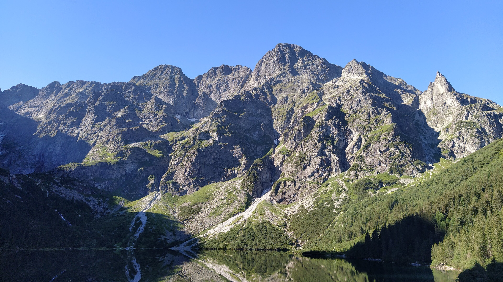
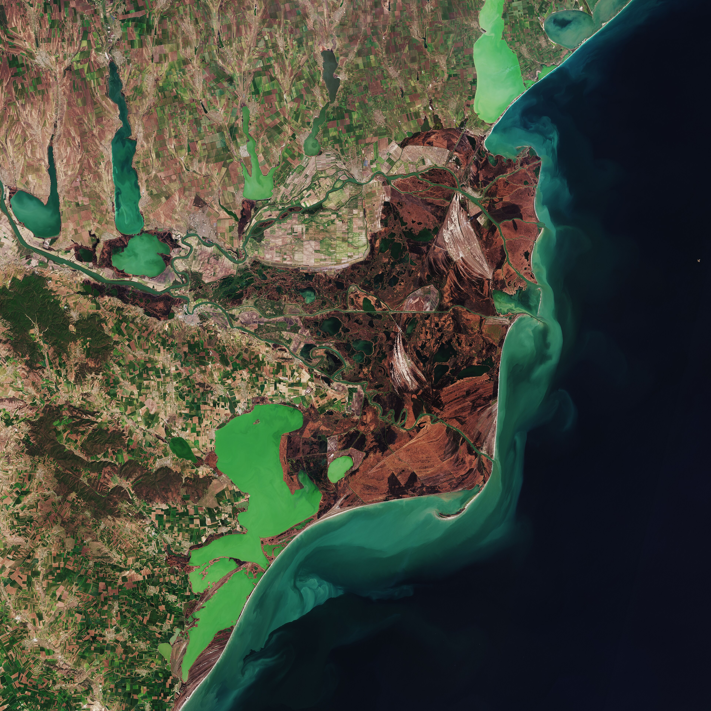
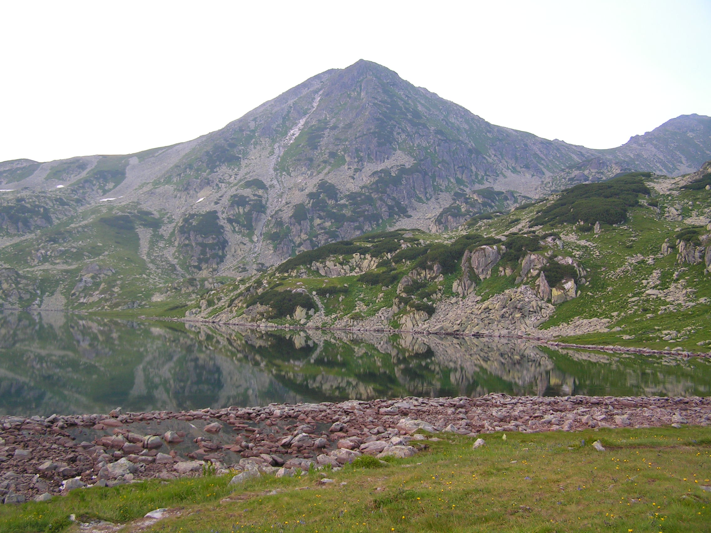
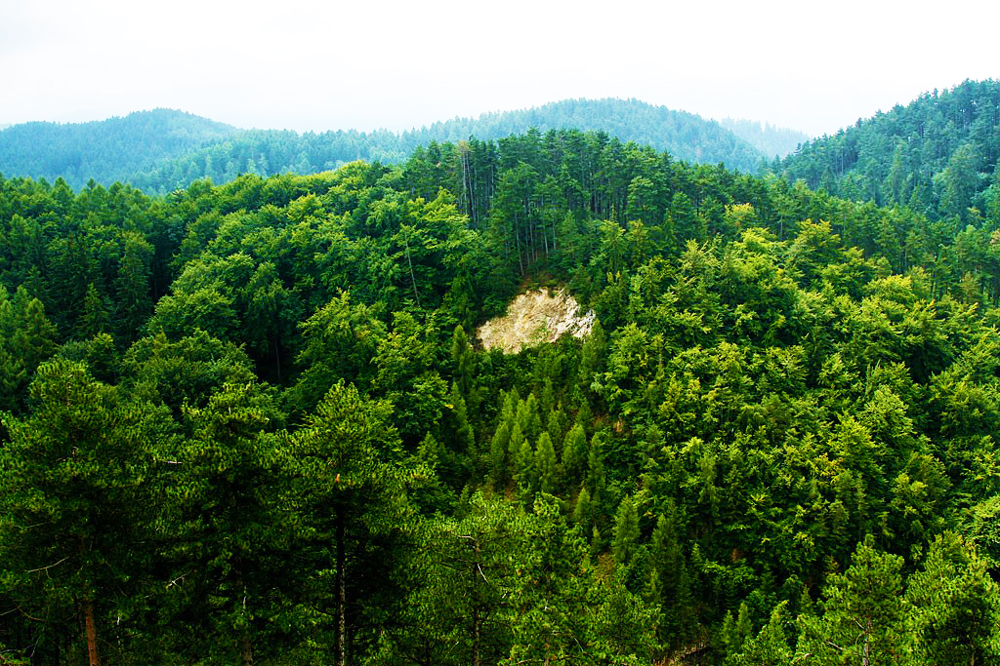
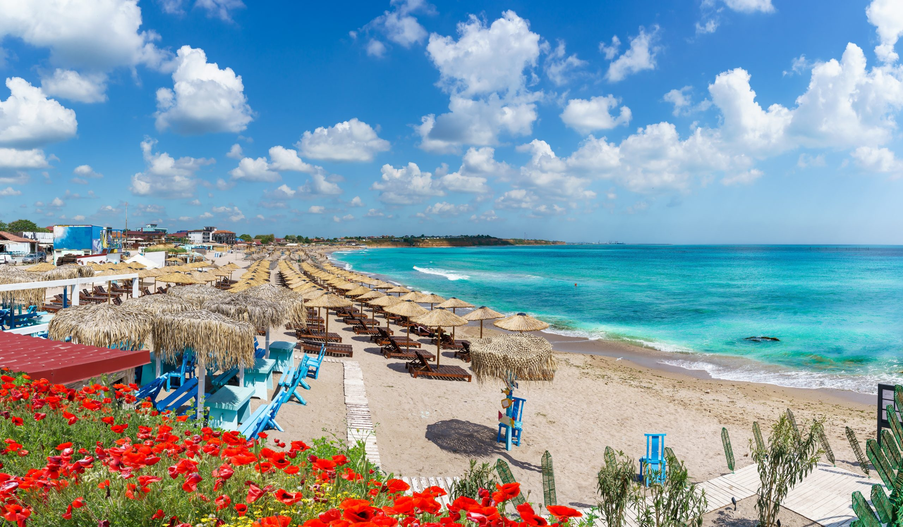
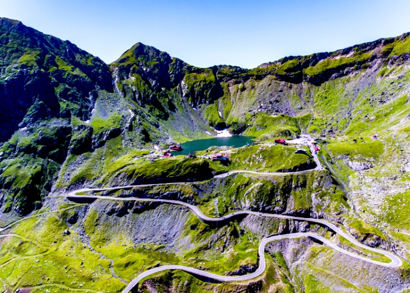
Lantul Carpatic reprezinta cea mai mare formatie montana din Europa Centrala si de Est, intinzandu-se pe o lungime de circa 1.500 km si traversand sapte tari. Cel mai semnificativ segment al lantului carpatic se afla pe teritoriul Romaniei — cu circa 900 km de lanturi montane ce acopera aproximativ o treime din suprafata tarii.
Carpatii romanesti sunt impartiti in trei mari grupe: Carpatii Orientali la est, Carpatii Meridionali (sau Alpii Transilvaniei) in sud — unde se afla si cel mai inalt varf, Moldoveanu (2.544 m) — si Carpatii Occidentali in vest. Aceasta diversitate interna creeaza un mozaic spectaculos de ecosisteme, de la pajisti alpine la paduri seculare de fag si conifere.
Unicitate europeana
Romania detine cel mai mare procent de paduri virgine si cvasivirgine din Uniunea Europeana — peste 500.000 de hectare de paduri primare, ecosisteme care nu au fost modificate de om de secole. Aceasta mostenire naturala este recunoscuta de UNESCO si WWF ca una dintre ultimele zone de padure primara din Europa.
Carpatii romanesti gazduiesc cea mai mare populatie de urs brun din Europa (aproximativ 6.000 exemplare), alaturi de lupi, lincsi, rasi, cerbi, capre negre si sute de specii de pasari. Ecosistemele alpine si subalpine sustin o flora extraordinara, cu numeroase specii endemice.
Statiunile montane (Sinaia, Predeal, Poiana Brasov, Borsa, Busteni) primesc anual milioane de vizitatori pentru schi, hiking, alpinism si turism de weekend. Lungimea totala a traseelor marcate depaseste 10.000 km.
Varful Moldoveanu (2544 m) — cel mai inalt punct din Romania. Parcul National Retezat — primul parc national din Romania, fondat in 1935, cu 80 de lacuri glaciare. Parcul National Bucegi — incluzand Sfinxul si Babele, simboluri ale culturii populare romanesti.
Delta Dunarii este una dintre cele mai spectaculoase zone umede din lume si cel mai bine conservat ecosistem de delta din Europa. Formata in urma cu aproximativ 10.000 de ani, delta este rezultatul procesului continuu de sedimentare la varsarea fluviului Dunarea in Marea Neagra, acumuland anual circa 67 de milioane de tone de aluviuni.
Cu o suprafata de aproximativ 5.800 km² pe teritoriul romanesc (incluzand si lacurile Razim-Sinoe), delta este un labirint de brate, canale, lacuri, bancuri de nisip, stufaris si paduri inundabile. Peisajul se transforma dramatic cu fiecare sezon — de la iernile aspre cu gheturi la explozia de verde si viu a primaverii si bogatia floristica a verii.
Statut international
Rezervatie a Biosferei UNESCO (din 1990) — primul sit transfrontalier UNESCO din Europa de Est, impartit intre Romania si Ucraina. Inclusa si pe lista Ramsar a zonelor umede de importanta internationala.
Peste 320 de specii de pasari cuibaritoare sau migratoare, inclusiv cea mai mare colonie de pelicani cret din Europa (aprox. 2.500 perechi cuibaritoare). Starcul alb, cormoranul mare, egreta, vulturul codalb si cocorul sunt prezente frecvente.
Circa 45 de specii de pesti traiesc in apele deltei, inclusiv specii valoroase de sturion (morun, cega, pastruga) care produc celebrul caviar romanesc. Dunarea si lacurile deltei sunt printre ultimele habitate europene de sturioni.
Delta este habitatul comunitatilor de lipoveni — descendenti ai vechi credincioilor rusi stabiliti aici in sec. XVIII — care au pastrat traditii de pescuit, mestesugarit si arhitectura vernaculara unica. Satele de delta sunt printre cele mai autentice din Romania.
Romania este una dintre putinele tari europene care reuneste in interiorul frontierelor sale cinci tipuri majore de relief: munte alpin, deal si podis, campie, zona de coasta si delta fluviala. Aceasta varietate extraordinara concentrata pe 238.000 km² ofera posibilitati turistice pe tot parcursul anului.
Cei 245 km de litoral romanesc, concentrati in judetul Constanta, reunesc statiuni balneare cu traditie (Mamaia, Eforie Nord, Costinesti, Neptun, Venus, Saturn) cu situri arheologice de exceptie. Constanta — vechea colonie greaca Tomis — este unul dintre cele mai vechi orase din Romania si gazduieste cel mai mare port la Marea Neagra din Europa.
Sezonul balnear: iunie–septembrie. Temperatura apei: 22-27°C. Infrastructura moderna de cazare (50.000+ locuri). Conexiune directa din toate marile orase prin autostrada A2 (Autostrada Soarelui).
Podisul Transilvaniei, Subcarpati, Campia Romana si Campia de Vest formeaza peisajul agrar si pastoral al tarii — o succesiune de coline cu sate asezate in vai, vii pe dealuri sudice si campii rodnice cu un orizont larg. Podisul Transilvanian, cu dealurile sale rotunjite si satele sasesti bine conservate, este unul dintre peisajele culturale cele mai apreciate de vizitatorii din Europa Occidentala.
Regiunile viticole Dealu Mare, Cotnari, Murfatlar, Recas si Purcari (Moldova) produc vinuri de calitate europeana, cu soiuri autohtone unice: Feteasca Neagra, Feteasca Alba, Tamaioasa Romaneasca, Cramposie.
Argument de brand: Nicio alta tara din Europa de dimensiuni similare nu reuneste munte, delta, mare, campie si dealuri cu peisaj cultural traditional intact in interiorul acelorasi frontiere. Aceasta diversitate comprimata este un activ strategic unic si trebuie comunicata activ in toate materialele de brand turistic.
Spre deosebire de multe culturi europene care si-au pastrat traditiile exclusiv in muzee, Romania are privilegiul unor traditii vii — practicate activ de comunitati reale, transmise din generatie in generatie fara intrerupere.
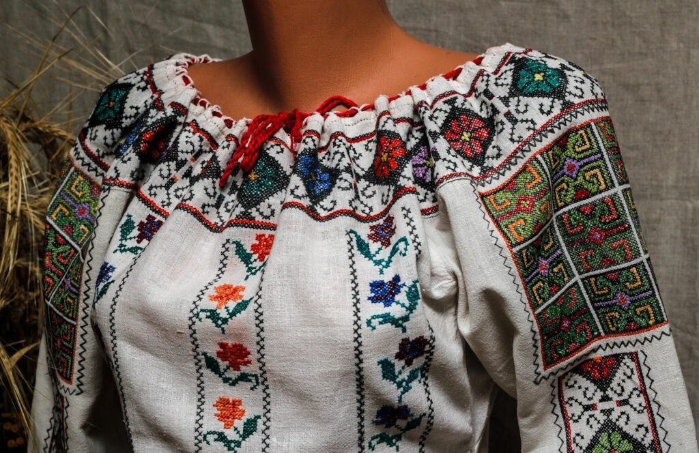
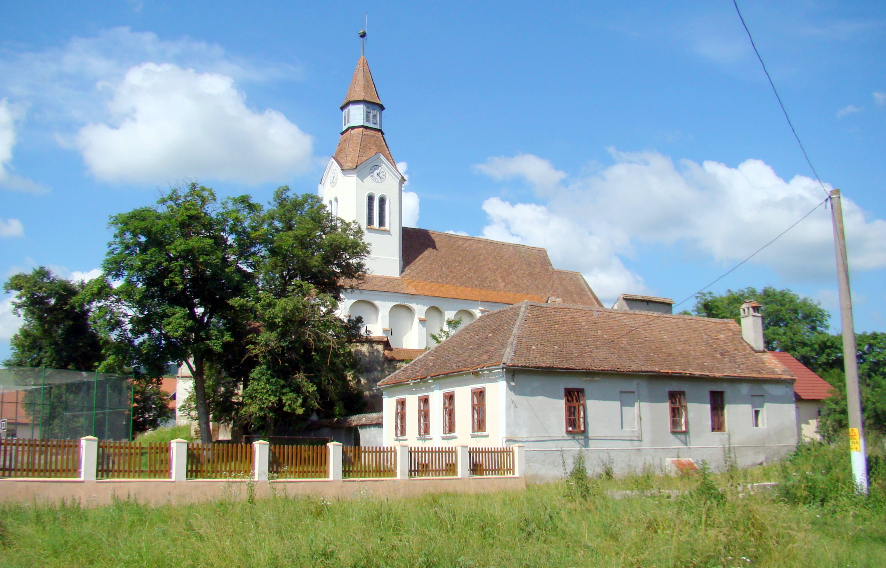
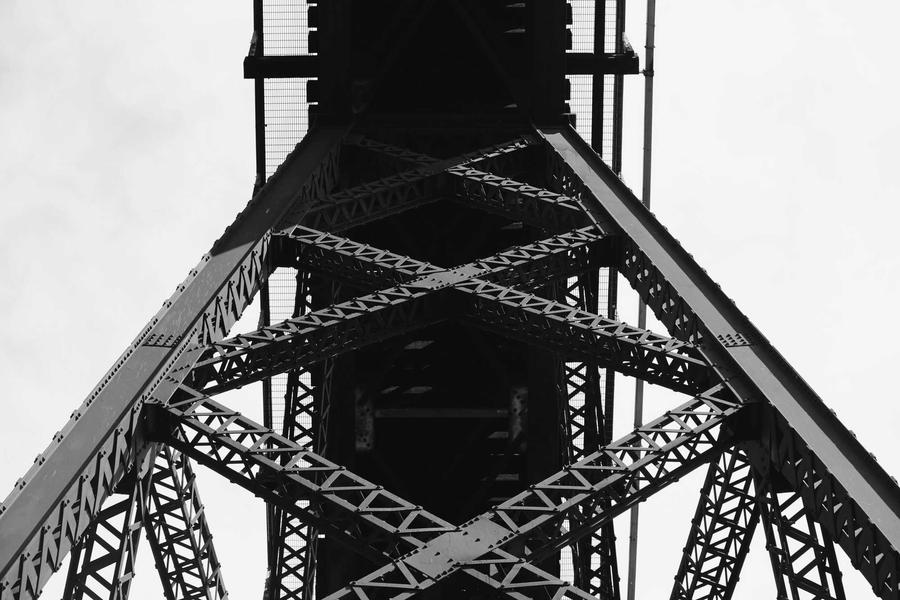
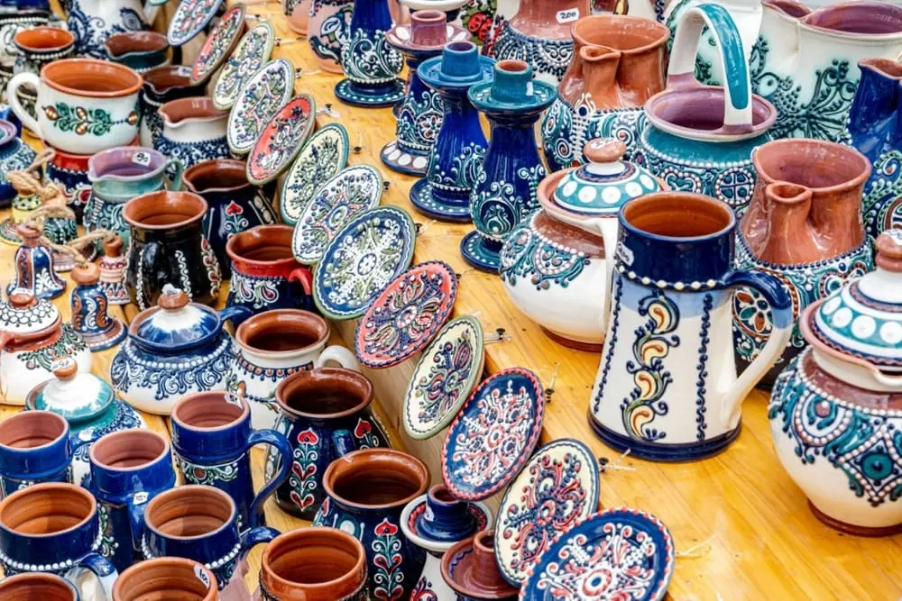
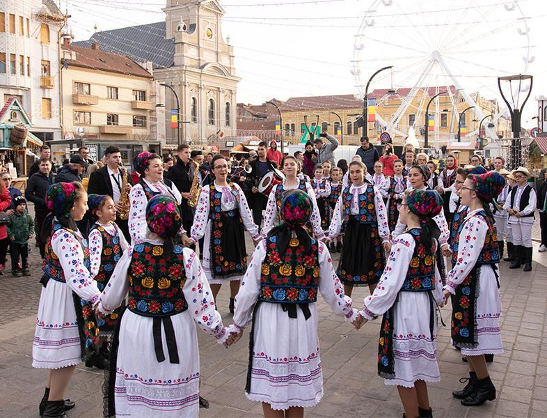
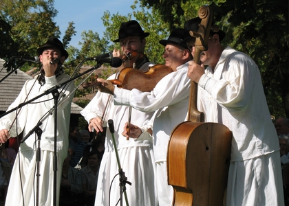
Doina, Calusul, Colindele de Craciun si Tehnica olararitului de la Horezu sunt inscrise pe Lista UNESCO a patrimoniului cultural imaterial al umanitatii. Romania are 8 elemente culturale imateriale recunoscute UNESCO.
Sute de festivaluri traditionale se desfasoara anual in toate regiunile: Targul de Fete de pe Muntele Gaina, Nedeia Muntilor, Targul Mestesugurilor Traditionale, Festivalul de Datini si Obiceiuri de Iarna.
Programele scolare nationale includ educatie privind traditiile locale. Zeci de ONG-uri si asociatii culturale activeaza in zone rurale pentru documentarea si transmiterea mestesugurilor traditionale.
24 iunie — Ziua Universala a Iei
Sarbatoarea internationala a iei romane este celebrata anual pe 24 iunie (de Sanziene), cu sute de evenimente pe cinci continente organizate de diaspora romaneasca si simpatizantii culturii romane.
Ia este camasa traditionala romaneasca — o piesa de imbracaminte cu o vechime de peste 2.000 de ani pe teritoriul carpato-dunarean, atestate iconografic pe monumentele dacice si romane si documentata in arta populara de-a lungul intregii istorii a poporului roman.
Fiecare regiune a tarii are un tip distinct de ie, cu motive, culori si tehnici de broderie specifice: iile negre si gri din Oltenia, iile cu altiță din Muntenia, iile colorate din Maramures, iile cu motive geometrice din Moldova. Aceasta diversitate regionala face din ie un document vizual al geografiei culturale romanesti.
In 2022, Consiliul Judetean Hunedoara a initiat demersurile de inscriere a iei pe Lista UNESCO a Patrimoniului Cultural Imaterial al Umanitatii, recunoscand valoarea ei ca simbol national viu si transfrontalier — prezent si in comunitatile romanesti din Ucraina, Moldova, Serbia si Ungaria.
Ia romaneasca a inspirat colectii ale unor case de moda internationale, inclusiv Yves Saint Laurent, care s-a inspirat explicit din broderia romaneasca pentru colectia sa din 1981. Designeri contemporani romani incorporeaza motivele ie in colectii purtate pe podiumuri internationale.
Ia este singurul element de imbracaminte traditional roman recunoscut global, cu o comunitate de purtatori si simpatizanti activi pe toate continentele. Reprezinta cel mai puternic ambasador vizual al identitatii culturale romanesti.
Romania are una dintre cele mai bogate traditii de mestesuguri manuale din Europa — tehnici transmise oral si practic de-a lungul generatiilor, cu materiale locale si estetici distinctive pentru fiecare regiune.
Ceramica de Horezu (jud. Valcea) este inscrisa din 2012 pe Lista UNESCO a Patrimoniului Cultural Imaterial. Tehnica unica de lucru pe roata, arderea in cuptoare traditionale si decoratiunile geometrice si zoomorfe — cu celebrul "melc" de Horezu — sunt transmise din generatie in generatie exclusiv in aceasta comunitate din Oltenia. Culoarea caracteristica: terra de Valahia (rosu, bej, albastru cobalt si verde).
Maramuresul este patria celei mai vechi si mai sofisticate traditii de prelucrare a lemnului din Romania. Portile monumentale de lemn sculptate sunt emblema regiunii — fiecare poarta este unica, cu motive geometrice si simboluri solare care servesc drept "biografie vizuala" a gospodariei. Biserica de lemn din Barsana, una dintre cele opt Biserici din Lemn din Maramures inscrise UNESCO, exemplifica varful acestei arte constructive.
Covoarele oltenesti, moldovenesti si maramuresene sunt piese textile de mare valoare, create pe razboi de tesut cu fire de lana vopsita natural. Motivele geometrice si florale reprezinta un limbaj vizual propriu fiecarei zone etnografice. Covoarele de Corund (Harghita) si impletiturile de paie si papura din Delta Dunarii completeaza paleta textilelor traditionale.
Arta incondeerii oualor de Paste este una dintre cele mai rafinate forme de arta miniaturala romaneasca. Tehnica batikului cu ceara fierbinte si vopsire succesiva in culori naturale produce modele de o complexitate remarcabila. Zona Bucovina — in special Ciocanesti si Vama — este recunoscuta international pentru maestria incodeierii. Ouale de Bucovina au inspirat designeri si artisti din intreaga lume.
Calendarul popular romanesc este structurat in jurul unui ciclu anual de sarbatori si obiceiuri care combina mostenirea precrestina (daca, romana, slavica) cu crestinismul ortodox — creand un sistem de ritualuri unic, profund si spectaculos vizual.
Simbol al venirii primaverii, martisorul este un mic talisman legat cu fir alb si rosu (culorile iernii si verii) care se daruieste femeilor si fetelor la 1 martie. Obiceiul, atestat de peste 8.000 de ani pe teritoriul romanesc, este astazi sarbatorit in toata Romania si in diaspora. In 2017, martisorul a fost inscris pe Lista UNESCO a Patrimoniului Cultural Imaterial (impreuna cu variante bulgare si moldovenesti).
Sanzienele (numite si Dragaica) marcheaza solstitiul de vara si coincide cu Ziua Universala a Iei. Fetele impletesc coronite din flori galbene de sanziene si le arunca pe acoperisurile caselor — unde cad sau unde raman prezice destinul. In unele sate din Ardeal, oamenii poarta sanziene la brau pentru sanatate si prosperitate. Sanzienele este data simbolica aleasa pentru brandul de tara Romania.
Colindele romanesti de Craciun (Colindatul) sunt inscrise pe Lista UNESCO din 2013. Spre deosebire de colindele din alte tari, colindele romanesti sunt executate de cete de colindatori (exclusiv barbati in unele zone) care merg din casa in casa in noaptea de Craciun, cantand melodii ritualistice cu versuri cu sens magic-protector. Fiecare regiune are propriul repertoriu si propria melodie de colinde.
Pastele romanesc este sarbatoarea comunitatii prin excelenta. Slujba de Inviere de la miezul noptii, cu lumina transmisa din om in om, este unul dintre cele mai puternice spectacole vizuale din calendarul crestin european. Masa de Paste — cu miel, drob, cozonac, pasca si oua rosii — este un ritual culinar transmis cu rigurozitate. In Bucovina, traditia vopsitului oualor este deosebit de elaborata.
Festivalurile si obiceiurile traditionale genereaza un flux turistic specific — turisti culturali care cauta experiente autentice, imposibil de gasit in alte destinatii europene. Pachete de turism experiential construite pe obiceiurile locale au un potential ridicat de diferentiere si premiumizare a ofertei turistice romanesti.
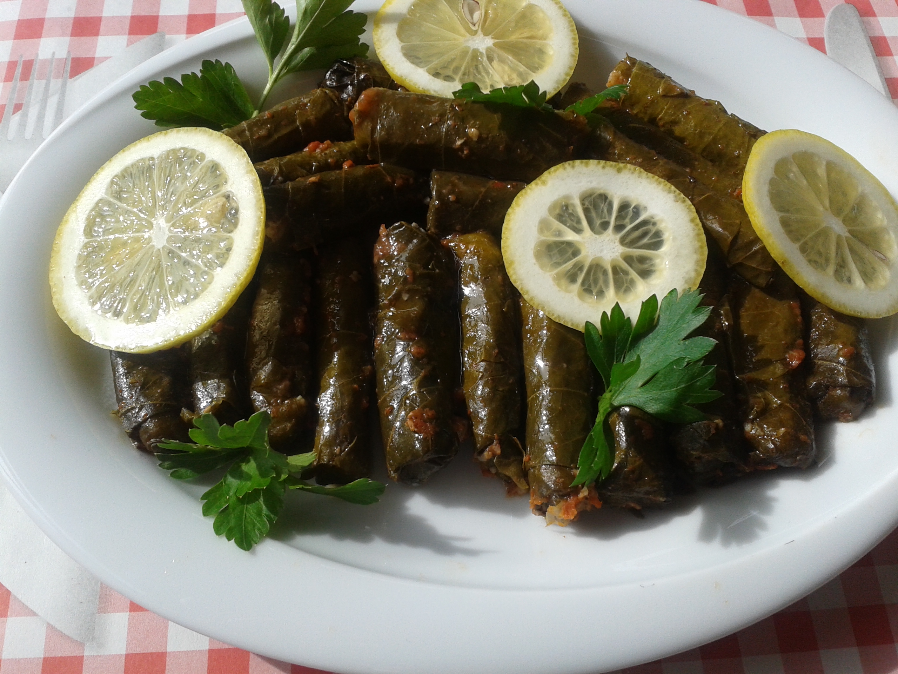
Gastronomia romaneasca este profund regionalizata — fiecare provincie istorica are preparate, ingrediente si tehnici culinare distincte, reflectand influente multiple: daca, romana, otomana, austro-ungara, slavica si orientala. Aceasta diversitate face din gastronomia romaneasca un teritoriu culinar de explorat pe multiple straturi.
Sarmale (colaci de varza cu carne), mamaliga cu branza si smantana, ciorba de burta, mici (carnati de la gratar fara membrane), tochitura moldoveneasca, muschi de vita cu sos de smantana, placinte cu branza si marar.
Romania — locul 5 in Europa la suprafata viticola. Soiuri autohtone: Feteasca Neagra, Feteasca Alba, Feteasca Regala, Tamaioasa Romaneasca. Regiuni: Dealu Mare, Cotnari, Murfatlar, Recas, Purcari.
Cascaval de Rucar, Telemea de Ibaneesti (PDO), branza de burduf din Bucegi, urda si cas de oaie maramuresean, cascaval afumat de Penteleu — toate produse artizanale cu specificitate geografica.
Ardei umpluți (Muntenia), zacusca (toata tara), cartofi cu branza (Maramures), scrumbie la gratar (Dobrogea), rasol de porc (Moldova), ghiveci (Valahia), turta dulce de Sibiu.
Muzica si dansul traditional romanesc formeaza un patrimoniu viu, recunoscut international prin multiple inscrierii UNESCO, si reprezinta una dintre cele mai distincte contributii culturale ale Romaniei la patrimoniul european.
Doina este genul muzical traditional romanesc cel mai reprezentativ — o melodie vocala de improvizatie libera, de factura lirica, cu o emotionalitate profunda si o structura melodica proprie ce nu se gaseste in nicio alta traditie europeana. Doina exprima dorul, jalea, iubirea si aspiratia — sentimentele definitorii ale temperamentului roman.
Inscrisa de UNESCO pe Lista Patrimoniului Cultural Imaterial al Umanitatii in 2009, doina este recunoscuta ca „unul dintre cele mai expresive genuri muzicale traditionale din lume". Marii interpreti de doina — Maria Tanase, Maria Lataretu, Fara Vlaicu — sunt legendele muzicii romanesti populare.
Nai (fluier de pan), fluier, tilinca, taragot, cimpoi, cobza, viola si vioara — instrumente care definesc sonoritatea traditionala romaneasca. Vioara lautareasca, cu tehnica sa distincta de interpretare, este considerata de specialisti una dintre cele mai complexe traditii de vioara din lume.
Calusul este un dans ritual masculin din Oltenia si Muntenia, practicat in perioada Rusaliilor (7 saptamani dupa Paste). Dansatorii — calusarii — formeaza formatii de 7-9 barbati conduse de un vatafel, care executa miscari acrobatice de o precizie si forta remarcabila. Dansul are origine magica, de vindecare — se crede ca cei atinsi de rele pot fi vindecati de calusari.
Calusul a fost inscris de UNESCO in 2008 pe Lista Patrimoniului Cultural Imaterial si este unul dintre cele mai spectaculoase dansuri traditionale europene. Grupuri de calusari romani au performat pe scenele celor mai importante festivaluri de folclor din lume.
Hora (dans in cerc, prezent in toata tara), Brau (dans barbatesc rapid), Sarbele, Ardeleana, Invartita (dans de perechi din Ardeal), Batuta (dans de bataie cu picioarele), Breaza si Alunelul — fiecare regiune cu repertoriul sau distinct.
Relevanta contemporana: Muzica traditionala romaneasca influenteaza activ muzicienii contemporani romani si internationali. Artisti ca Ducu Bertzi, Fanfare Ciocarlia sau Taraf de Haidouks au adus muzica populara romaneasca pe scenele internationale, iar influente din folclorul romanesc se regasesc in lucrarile unor compozitori contemporani din intreaga lume.
Distinctia esentiala a brandului cultural Romania sta in caracterul viu al patrimoniului sau imaterial. Spre deosebire de tari care au conservat traditii in forma muzeificata, Romania le traieste — ceea ce reprezinta argumentul sau strategic cel mai puternic.
Termenul „muzefificat" descrie traditii care au supravietuit exclusiv in spatii institutionale: costume nationale expuse in muzee, melodii inregistrate in arhive, dansuri executate de ansambluri folclorice in fata publicului turist. Aceasta forma de conservare, desi valoroasa, pierde esenta socialita a traditiei.
Romania are si aceasta forma de conservare institutionala — dar are in plus ceva rar: comunitati reale in care traditiile sunt inca integrate in viata cotidiana. Meresenii din Maramures care isi poarta costumul popular la slujba de duminica, ceramistii din Horezu pentru care olaria e profesie, nu hobby, sau femeile din Oltenia care colinda si impodobesc ouale de Paste cu tehnici mostenitute din stramosi — acestea sunt realitati, nu reconstituiri.
Ritual masculin de dans din Oltenia si Muntenia.
Muzica vocala traditionala de improvizatie lirica.
Obicei de primavara (impreuna cu Bulgaria, Moldova, Macedonia).
Traditia cetei de colindatori de Nasterea Domnului.
Tehnica olararitului si decoratiunii specifice regiunii Horezu.
Concluzie strategica pentru brand
Patrimoniul imaterial viu al Romaniei este imposibil de replicat si dificil de copiat. El face din Romania o destinatie de „experienta autentica" — categorie premium in turismul cultural modern, cu crestere anuala de 15-20% la nivel global. Comunicarea acestui patrimoniu trebuie sa fie autentica, contextualizata si respectuoasa — nu kitsch turistic sau exoticizare superficiala.
Romania a contribuit la civilizatia umana prin monumente durabile, personalitati de talie mondiala si inovatii care au schimbat cursul istoriei. Acest capitol catalogheaza aceste contributii si construieste argumentul pentru relevanța contemporana a brandului Romania.
Romania detine una dintre cele mai dense concentratii de castele medievale, cetati dacice si fortarete din Europa Centrala si de Est — un patrimoniu construit care acopera doua milenii de continuitate civilizationala.
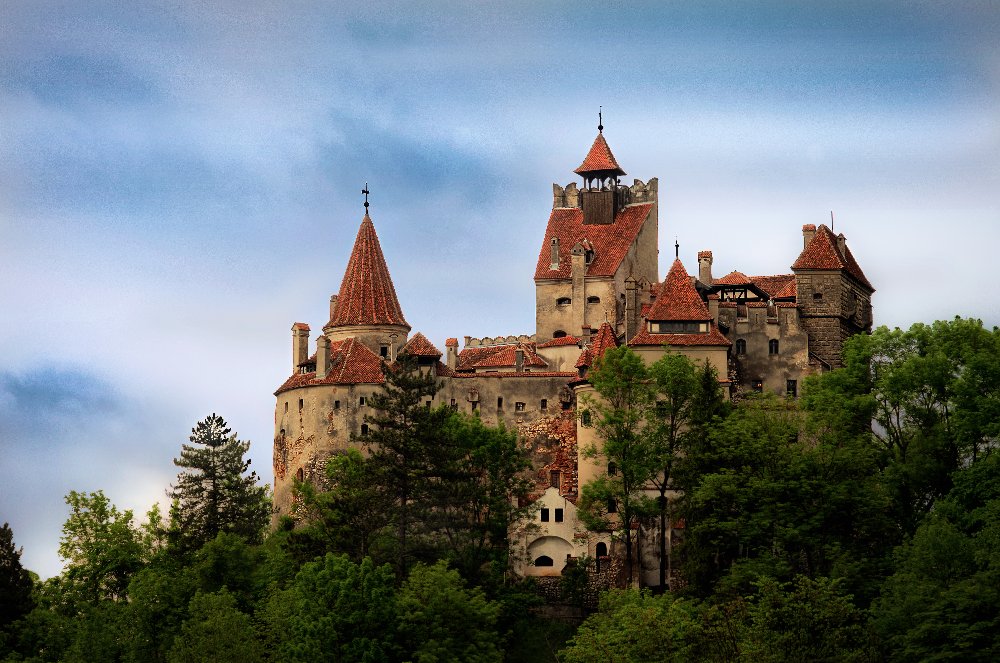


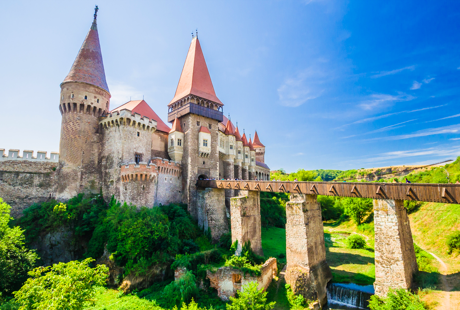
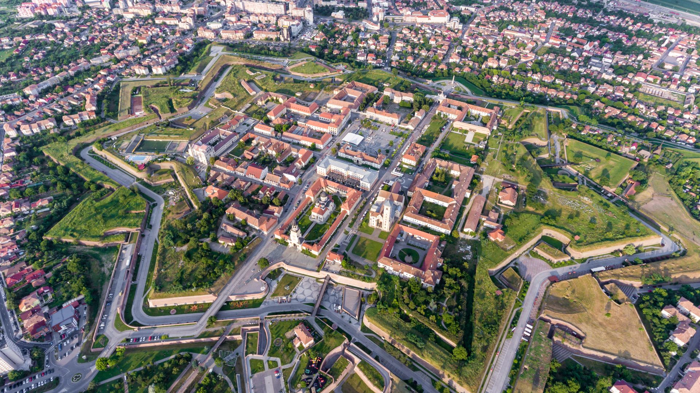
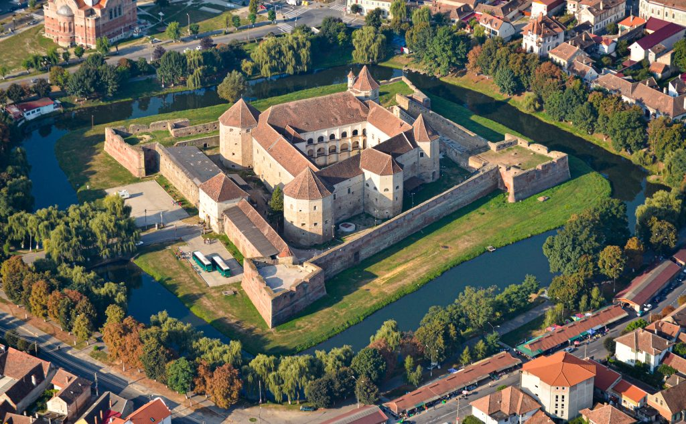
Construit in sec. XV de Iancu de Hunedoara, este unul dintre cele mai mari si mai bine conservate castele gotice din Europa. Turnuri impunatoare, pod levanier, foisoare — un spectacol arhitectural complet.
Fortarata in stil Vauban construita in sec. XVIII, cu 7 bastioane stelate si 6 km de ziduri. Gazduieste Catedrala Incoronarii, unde Regele Ferdinand I si Regina Maria au fost incoronati in 1922 ca suverani ai Romaniei Mari.
Construit intre 1873 si 1914 la initiativa Regelui Carol I, Pelesul este considerat unul dintre cele mai frumoase castele din Europa — o sinteza de neo-renascentism german cu elemente baroce, rococo si moriste, cu 160 de camere decorate impecabil.
Romania are 8 situri inscrise pe Lista Patrimoniului Mondial UNESCO — o concentratie remarcabila pentru o tara de dimensiunile sale, care acopera patrimoniul natural, cultural si mixt al civilizatiei romanesti.
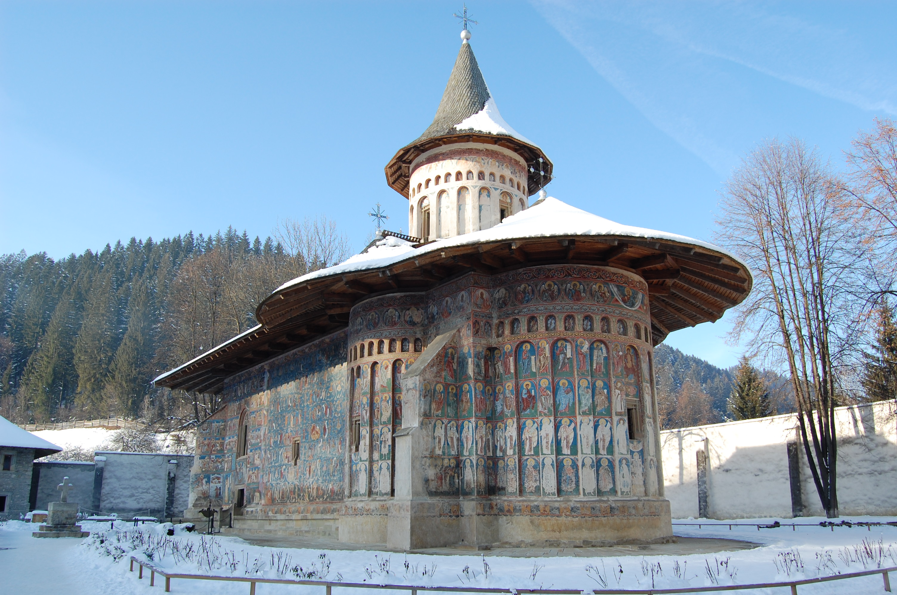
Voronet, Sucevita, Moldovita, Humor si Arbore sunt sapte manastiri moldovenesti cu frescele exterioare ale sec. XV-XVI, executate in tehnica al fresco pe suprafete extinse. „Albastrul de Voronet" — un pigment unic al carui secret de preparare s-a pierdut — a facut din Voronet „Capela Sixtina a Estului". Pictarea exterioara completa a unui edificiu de cult este unica in arhitectura religioasa mondiala.
Sighisoara este una dintre putinele cetati medievale inca locuite din Europa — cu un centru istoric perfect conservat, dominat de Turnul cu Ceas (sec. XIV), o retea de turnuri de breasla, case colorate si o atmosfera autentic medievala. Fondata de sasi in sec. XII, Sighisoara este considerata cel mai bine pastrat oras medieval din Europa de Est.
Primul sit natural transfrontalier UNESCO din Europa de Est, recunoscut ca rezervatie a biosferei pentru unicitatea sa ecologica. Acoperind 580.000 ha pe partea romaneasca, Delta este cel mai mare sit Natura 2000 din Romania.
Sase cetati dacice din Muntii Orastiei (Sarmizegetusa Regia, Blidaru, Costesti-Cetatuie etc.) reprezinta capodopere ale arhitecturii militare dacice din sec. I i.Hr. Tehnica unica de constructie — murus dacicus — nu se regaseste in nicio alta cultura contemporana.
Satele cu biserici fortificate din Transilvania (1993, extins 1999) — 7 sate cu cetati religioase sasesti; Manastirea Hurezi (1993) — model al stilului brancovenesc; Pestera cu Oase — Pestera Muierilor si alte 4 situri preistorice (in evaluare).
Romania are sase centre urbane majore cu identitate culturala distincta, fiecare cu o stratificare istorica unica, arhitectura de exceptie si o viata culturala vie — o hartie urbana extraordinar de diversa pentru o tara de marimea Romaniei.
Fondata de coloni saxoni in sec. XII, Sibiu este unul dintre cele mai bine conservate orase medievale din Europa. Piata Mare, Podul Minciunilor, bisericile gotice si bastionul medieval formeaza un centru istoric exemplar. In 2007, Sibiu a fost Capitala Culturala Europeana — un moment care a transformat orasul si a crescut turismul de 5 ori.
Asezat in inima Muntilor Carpatici, Brasovul este unul dintre cele mai frumoase orase din Romania. Centrul vechi cu Piata Sfatului, Biserica Neagra (cea mai mare biserica gotica din Romania), Poarta Schei si stranele strazi medievale sunt completate de proximitatea Castelului Bran si statiunii Poiana Brasov.
Cel mai dinamic oras din Romania, Cluj-Napoca combina un centru istoric medieval impecabil cu un ecosistem de startupuri si IT extrem de activ. Cu 100.000 de studenti si o piata de munca tech in explozie, Clujul este „Silicon Valley-ul Europei de Est" — cu un cost de trai si o calitate a vietii superioare comparabilelor occidentale.
Timisoara a fost Capitala Culturala Europeana in 2023, confirmand statutul sau de oras multicultural si cosmopolit. Primul oras din lume cu iluminat stradal electric (1884), Timisoara are un centru Art Nouveau exceptional, o scene artistica avangardista si o identitate etnica mozaicata (romani, germani, maghiari, sarbi).
Fosta capitala a Moldovei (1565-1862), Iasul este orasul universitatilor si al culturii romane clasice. Palatul Culturii, Universitatea Alexandru Ioan Cuza (prima universitate din Romania, 1860), Teatrul National Vasile Alecsandri si Copou — parcul cu Teiul lui Eminescu — fac din Iasi un oras de pelerinaj cultural.
Oradea detine una dintre cele mai impresionante colectii de arhitectura Art Nouveau si Secession din Europa Centrala — cu circa 600 de cladiri de patrimoniu intr-un centru urban recent restaurat. Orasul a investit masiv in reabilitarea patrimoniului, devenind un exemplu de recuperare urbana recunoscut international.
Istoria Romaniei a produs conducatori, strategi si reformatori care au marcat nu doar destinul national, ci si cursul mai larg al istoriei Europei Centrale si de Est.
Domn al Moldovei · 1457-1504
Cel mai longeviv si mai de succes conducator medieval roman, Stefan cel Mare a condus Moldova timp de 47 de ani, respingand 36 de atacuri armate — inclusiv doua ofensive otomane — si construind 44 de manastiri ca multumire pentru fiecare victorie. Canonizat de Biserica Ortodoxa Romana in 1992 ca „Stefan cel Mare si Sfant". Papa Sixt IV l-a denumit „atletul lui Hristos".
Domn Valah, Transilvean si Moldovean · 1593-1601
Primul conducator care a unit, fie si pentru scurt timp (1600), cele trei principate romanesti — Tara Romaneasca, Moldova si Transilvania — sub o singura coroana. Simbol al unitatii nationale, Mihai Viteazul este considerat precursorul statal al Romaniei moderne. Victoria de la Calugareni impotriva otomanilor (1595) a intrat in legendarul militar european.
Domn al Principatelor Unite · 1859-1866
Ales simultan domn al Moldovei si Tarii Romanesti in 1859, Cuza a realizat de facto Unirea Principatelor si a initiat reformele fundamentale ale statului roman modern: reforma agrara (impartirea pamanturilor), secularizarea averilor manastiresti, codul civil francez, prima universitate, primul teatru national. Reformatorul care a transformat doua principate medievale intr-un stat european modern.
Regele Romaniei · 1866-1914
Sub Carol I, Romania a castigat independenta de stat (1877-1878), a construit prima retea feroviara, primele institutii nationale (Academia Romana, Universitatea Bucuresti, BCR), a obtinute Dobrogea si a transformat Bucurestiul intr-un oras european modern. Castelul Peles din Sinaia, construit la initiativa sa, ramane cel mai impresionant monument al epocii sale.
Regina Romaniei · 1914-1927
Nepoata Reginei Victoria a Marii Britanii, Regina Maria a Romaniei este considerata una dintre cele mai influente regine din istoria europeana. Diplomatia sa personala la Conferinta de Pace de la Paris (1919-1920) a fost decisiva pentru obtinerea Transilvaniei, Banatului, Bucovinei si Basarabiei — formand Romania Mare. Artista, scriitoare si infirmiera voluntara in Razboiul de Independenta, a fost supranumita „Inima Romaniei".
Romania a dat lumii artisti, scriitori, muzicieni si sculptori care au influentat decisiv cultura europeana si mondiala din sec. XIX-XX, lasand opere care continua sa fie studiate, interpretate si admirate in intreaga lume.
Poet · 1850-1889
Cel mai mare poet roman, supranumit „Luceafarul poeziei romanesti". Opera sa — Luceafarul, Scrisori, Doina — a definit literatura romana moderna si continua sa fie unul dintre cei mai cititi si studiati autori romani. Eminscu a combinat filozofia schopenhauerian cu mitologia romaneasca intr-o sinteza poetica unica. Ziua Culturii Nationale (15 ianuarie) marcheaza aniversarea sa.
Sculptor · 1876-1957
Fondatorul sculpturii moderne, Brancusi a revolutionat arta plastica a sec. XX prin reducerea formelor la esenta lor geometrica. Coloana fara Sfarsit, Masa Tacerii, Poarta Sarutului (ansamblul de la Targu Jiu) si Pasarea in Spatiu sunt lucrari cu o influenta incomensurabil de vasta asupra sculpturii, designului si arhitecturii moderne. Lucrari ale lui Brancusi se afla in cele mai mari muzee din lume si au atins recorduri de pret la licitatii internationale.
Compozitor / Violonist · 1881-1955
Cel mai mare muzician roman, Enescu a fost concomitent compozitor de geniu, violonist de exceptie si dirijor de clasa mondiala. Rapsodiile Romane nr. 1 si 2, Sonata „in caracter popular romanesc" si opera Oedip sunt capodopere ale repertoriului clasic european. A fost profesorul lui Yehudi Menuhin. Festivalul International George Enescu de la Bucuresti este unul dintre cele mai prestigioase evenimente muzicale europene.
Dramaturg / Scriitor · 1852-1912
Cel mai mare dramaturg roman si unul dintre cei mai acuți observatori ai societatii din literatura europeana. Piesele sale — O Scrisoare Pierduta, O Noapte Furtunoasa, Conu Leonida — sunt satire lucide ale demagogiei, coruptiei si mediocritatii umane care raman izbitoare de actuale. Caragiale este jucat constant in teatrele romanesti si european si considerat un precursor al absurdismului dramatic modern.
Pictor · 1838-1907
Fondatorul picturii romane moderne, Grigorescu a studiat la Barbizon alaturi de Courbet si a influentat decisiv scoala nationala de pictura. Peisajele sale romanesti, portretele de tarani si scenele din Razboiul de Independenta sunt emblematice pentru identitatea vizuala a culturii romane. Lucrari de Grigorescu se afla in colectii internationale si reprezinta varf de licitatie la casele internationale de arta.
Romania a produs un numar remarcabil de oameni de stiinta si inventatori care au adus contributii fundamentale in aviatie, medicina, inginerie si cibernetica — domenii in care romanii au anticipat solutii cu decenii inainte ca lumea sa le recunoasca.
Inginer aeronautic · 1886-1972
A construit primul avion cu reactie din lume (1910, Paris), cu 30 de ani inaintea avioanelor cu reactie comerciale. Efectul Coanda — principiul de fizica al flugelui de fluid — poarta numele sau si este folosit in aviatie, hidrodinamica si design industrial modern.
Inventator · 1872-1950
A realizat primul zbor autopropulsat si autonom al unui aparat mai greu decat aerul, fara catapulta sau rampa (18 martie 1906, Montesson, Franta). Aparatul sau — „Vuia 1" — a zburat 12 metri, demonstrand pentru prima data ca un om poate zbura fara asistenta externa.
Inginer / Pilot · 1882-1913
Proiectat si construit primul avion romanesc — Vlaicu I (1909) — si a obtinut multiple recorduri de viteza si altitudine la concursuri internationale de aviatie. Sistemul sau de stabilizare lateral-directionala a influentat designul avioanelor din epoca. Mort la 31 de ani incercand sa traverseze Carpatii.
Fiziolog · 1869-1931
A descoperit insulina in 1921 (inainte ca Banting si Best din Canada sa isi publice rezultatele), numindu-o „pancreatina". Desi controversa istorica a atribuirii premiului Nobel continua, contributia sa fundamentala la descoperirea tratamentului diabetului este recunoscuta de istoria medicala.
Medic / Cibernetician · 1902-1978
A publicat in 1938-1939 „Psihologia Consonantista" — o lucrare considerata precursoare a ciberneticii cu 10 ani inainte ca Norbert Wiener sa lanseze termenul oficial. Recunoscut postum ca parintele ciberneticii generalizate, Odobleja este inclus in manualele internationale de istoria stiintei.
Inginer · 1854-1925
Proiectat si construit Podul Cernavoda (1895) — la inaugurare, cel mai lung pod din Europa si al treilea din lume (4.037 m), cu o tehnica inovatoare de folosire a betonului armat. Podul a functionat fara reparatii majore timp de 100 de ani. Saligny este considerat cel mai important inginer roman din toate timpurile.
Relevanta de brand: Aceste descoperiri demonstreaza ca spiritul de inovatie romanesc nu este un fenomen recent — este o trasatura culturala profunda, cu o continuitate de peste 150 de ani. Romania nu imprimuta inovatie — o produce.
In sport, Romania a produs atleti care nu au castigat simple medalii — au redefinit standardele mondiale ale disciplinelor lor si au inscris numele tarii in cartile de recorduri ale umanitatii.
Gimnastica · n. 1961
La Jocurile Olimpice de la Montreal 1976, la varsta de 14 ani, Nadia Comaneci a obtinut primul 10 perfect din istoria gimnasticii olimpice — nu o data, ci de 7 ori. A castigat 3 medalii de aur olimpice la Montreal si inca 2 la Moscova 1980. Considerata de CNN si ESPN „sportiva femeie a secolului XX", Nadia este cel mai recunoscut sportiv roman din toate timpurile si unul dintre cei mai celebri romani la nivel mondial.
Tenis · n. 1946
Primul jucator din lume la tenis profesionist (1973-1974), Nastase a castigat Roland Garros (1973) si US Open (1972), plus 7 titluri de dublu de Grand Slam. Cu un talent nativ si un caracter exploziv, „Nasty" a fost unul dintre cei mai populari si charismatici tenismeni ai istoriei — ambasador involuntar dar eficient al sportului romanesc.
Tenis · n. 1991
Locul 1 mondial in tenis feminin (2017-2019), Simona Halep a castigat Roland Garros (2018) si Wimbledon (2019), devenind cea mai de succes sportiva romana dupa Nadia. Jocul sau inteligent, rezistenta mentala si fair-play-ul i-au adus admiratia publicului din intreaga lume si o contributie majora la imaginea internationala a Romaniei contemporane.
Fotbal · n. 1965
Supranumit „Maradona al Carpatilor", Hagi este cel mai mare jucator de fotbal roman din toate timpurile. Cu 125 de selectii si 35 de goluri pentru nationala, Hagi a condus Romania la Campionatul Mondial din 1994 (SUA), unde echipa a ajuns in sferturile de finala — cel mai bun rezultat din istoria fotbalului romanesc. A jucat la Real Madrid, Barcelona si Galatasaray.
Canoe-Kayak · 1949-2021
Cel mai medaliat sportiv roman din toate timpurile: 4 medalii olimpice de aur, 1 de argint si 3 de bronz, plus 22 de medalii mondiale. Nascut intr-un sat din Delta Dunarii, Patzaichin a venit din una dintre cele mai autentice comunitati romanesti traditionale si a ajuns simbol global al sportului de apa. Activismul sau pentru protejarea Deltei Dunarii si turismul sustenabil l-a facut un ambasador exceptional al Romaniei.
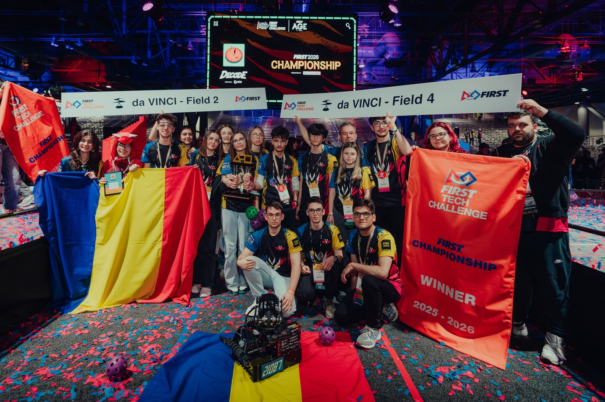
Generatia tanara de inovatori
Echipele romanesti de robotica (FTC, FRC) obtin constant rezultate de top la competitiile internationale, demonstrand ca inovatia romaneasca nu este o mostenire a trecutului — este o realitate a generatiei actuale, construita in laborator, nu in muzeu.
Romania a devenit in ultimul deceniu unul dintre cele mai importante hub-uri tech din Europa Centrala si de Est. Combinatia dintre universitate tehnice de calitate, salarii competitive sub media occidentala si o comunitate de programatori cu cultura puternica a performantei a atras investitii masive de la companii globale.
Fondata la Bucuresti de Daniel Dines, UiPath este compania de automatizare robotica a proceselor (RPA) lider mondial, cotata la bursa NYSE cu o capitalizare de piata de peste 10 miliarde USD. Este cel mai valoros unicorn tech din Europa de Est si prima companie romaneasca listata la Wall Street.
Fondata la Bucuresti in 2001, Bitdefender este recunoscuta constant ca unul dintre cei mai buni producatori de software antivirus si securitate cibernetica din lume, cu 500 milioane de dispozitive protejate si prezenta in 150 de tari.
Microsoft, Oracle, IBM, Amazon, Google, Adobe, Endava si zeci de alte corporatii globale au centre de cercetare-dezvoltare la Cluj, Bucuresti, Iasi, Timisoara si Brasov — alegand Romania pentru calitatea inginerilor disponibili.
Dincolo de personalitatile individuale, Romania a produs branduri colective — produse, companii si artefacte culturale care reprezinta tara pe pietele internationale si contribuie la consolidarea imaginii de brand Romania.
Automatizare robotica de procese (RPA). NYSE: PATH. Capitalizare 10Mld USD+. Fondatori romani, piata globala.
Cybersecurity. 500M dispozitive protejate. Produs in Romania, vandut in 150 de tari. Lider mondial in antivirus.
E-commerce. Cel mai mare retailer online din Romania, cu expansiune in Bulgaria, Ungaria si Polonia. Parte din Naspers.
Automobil accesibil de calitate. Vandut in 44 de tari. Modelul Sandero — bestseller in Europa 5 ani consecutivi.
Apa minerala carbogazoasa din Harghita. Exportata in 30 de tari. „Regina apelor minerale" — premiata la expozitii internationale inca din 1873.
Vinuri din Dobrogea. Producator cu traditie din 1957. Exporturi in Europa, SUA si Asia. Soiuri autohtone Feteasca Neagra si Chardonnay de Murfatlar.
Caviarul de sturion din Delta Dunarii — unul dintre putinele caviare autentice salbatice ramas in Europa. Produs rar, premium, cu trimitere directa la patrimoniul natural.
Bautura traditionala cu indicatie geografica protejata (IGP) in UE. Palinca autentica de Maramures este distilata traditional, fara adaosuri, cu o concentratie alcoolica de 50-70%.
Simbol vestimentar national recunoscut international. Piese artizanale comercializate pe piete premium la preturi de 200-2000 EUR. Inspiratie pentru fashion international.
Inscris UNESCO. Piese artizanale comercializate in galerii de design si muzee internationale. Printre cele mai apreciate ceramici traditionale europene.
Arta miniaturala de referinta. Expuse in muzee internationale. Comercializate ca obiecte de arta (50-500 EUR/bucata). Simbol al maiestriei artizanale romanesti.
Dincolo de companiile-vedeta, Romania are un ecosistem digital de dimensiuni considerabile — cu zeci de mii de profesionisti, sute de companii si o infrastructura digitala in continua expansiune care o plaseaza in top 10 european la mai multe categorii.
Universitatile tehnice din Cluj-Napoca, Bucuresti, Iasi, Timisoara, Brasov si Craiova produc anual peste 8.000 de absolventi de informatica si inginerie software. Politehnica Bucuresti si Universitatea Tehnica din Cluj-Napoca sunt clasate constant in top 500 mondial la categoriile tehnice, iar concurentele lor la olimpiadele internationale de informatica (IOI) aduc in mod regulat medalii de aur pentru Romania.
Romania este in top 10 mondial la olimpiadele internationale de informatica (IOI) si matematica (IMO) — cu zeci de medalii de aur in ultimii 20 de ani, demonstrand calitatea educatiei STEM.
Marile corporatii tech mondiale au ales Romania ca locatie pentru centre de cercetare-dezvoltare:
Combinatia dintre calitate tehnica de top, salarii sub media europeana, fusul orar european si cultura organizationala compatibila cu Occidentul face din Romania prima alegere pentru externalizarea de R&D din Europa.
Startup-uri romanesti notabile (dincolo de unicorni): Flowx.ai (AI bancara), Rippling (HR), FintechOS (servicii financiare), Deepstash (aplicatie de invatare), SeedBlink (equity crowdfunding), Teleport (travel tech) si zeci de altele cu investitii internationale confirmate in 2023-2024.
Dupa parcurgerea celor doua capitole de documentare, un singur argument iese in evidenta cu o claritate fara echivoc: Romania are tot ce este necesar pentru un brand de tara puternic, credibil si distinctiv. Nu lipsesc continuturile — lipseste narativa coerenta care sa le uneasca.
Concluzie strategica
Documentarea confirma ca sloganul „Unde tradiția întâlnește viitorul" nu este o constructie de marketing — este o realitate descrisa de fapte verificabile. Brandul Romania nu inventa o tara noua: da forma vizuala si verbala uneia care exista deja, cu toata complexitatea, profunzimea si potentialul ei.
Continua in capitolele urmatoare — Sistemul de Logo, Culori & Tipografie
Logo-ul României este pilonul central al sistemului de brand. Fiecare element al simbolului — de la litera R stilizată până la tricolorul de sub wordmark — comunică o poveste: rădăcini profunde, peisaje definitorii și o națiune care privește cu curaj spre viitor.
Acest capitol stabilește regulile clare de utilizare, variantele oficiale, dimensiunile minime și comportamentul logo-ului pe orice suprafață sau mediu. Respectarea acestor norme garantează coerența și forța comunicativă a brandului România.
Simbolul R nu este o simplă literă — este o sinteză vizuală a identității românești. Fiecare element structural poartă o semnificație precisă, compunând împreună o marcă unică și imediat recognoscibilă.
Structura de bază — România cu inițiala sa. Geometria modernă a lui R conferă claritate și forță la orice dimensiune.
Siluetele albe din interiorul simbolului evocă lanțul carpatic, coloana vertebrală geografică și spirituală a României.
Elementul verde din simbolul R face trimitere la pădurile seculare ale României, al doilea plămân verde al Europei după Rusia.
Curba fluidă simbolizează Dunărea și Delta — cel mai mare ecosistem de zone umede din Europa, dar și conectivitatea națiunii.
Traseul galben în formă de circuit electronic reprezintă România digitală: ecosistemul tech în creștere, startup-urile și infrastructura viitorului.
Galbenul vibrant al soarelui reflectă caracterul deschis al românilor, energia creatoare și optimismul cu care România privește spre viitor.
Tricolorul sub wordmark: Bara de culori albastru–galben–roșu de sub numele „ROMÂNIA" nu este decorativă — este ancora identitară. Reprezintă drapelul național și ancorează brandul în apartenența sa clară: o națiune cu trecut suveran și viitor ambițios.
Logo complet · versiunea standard · uz universal
Aceasta este varianta principală a logo-ului și prima alegere pentru orice context de comunicare. Se utilizează pe fonduri deschise (alb, gri deschis, bej). Niciodată nu se modifică proporțiile, culorile sau elementele componente.
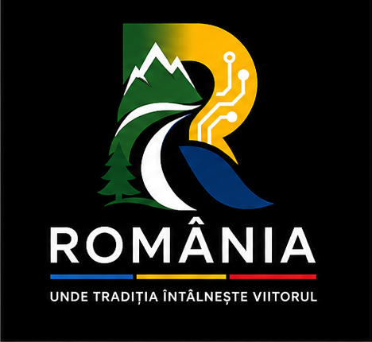
Logo complet · versiunea pe fundal închis · uz nocturn/premium
Varianta pentru fonduri închise (negru, albastru-profund, gri-antracit). Elementele logo-ului sunt adaptate pentru contrast maxim pe suprafețe întunecate. Se utilizează exclusiv această versiune — nu se aplică logo-ul standard pe fonduri închise.
Sistemul de logo cuprinde patru variante aprobate pentru fonduri deschise. Fiecare variantă are un context specific de utilizare — nu sunt interschimbabile arbitrar.

Regula de prioritate: Folosește întotdeauna logo-ul complet (varianta 01) când spațiul permite. Treci la variante simplificate doar când constrângerile de spațiu o impun. Niciodată nu combina elemente din variante diferite.
Pe fonduri închise se utilizează exclusiv versiunile adaptate din setul de mai jos. Niciodată nu se aplică variantele pentru fundal deschis pe suprafețe întunecate.
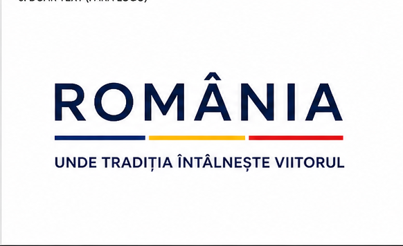
Atentie: Pe fonduri colorate (albastru-profund, roșu-accent), se testează întotdeauna contrastul înainte de utilizare. Dacă contrastul minim WCAG AA (4.5:1) nu este atins, se adaugă un background intermediar alb sau negru sub logo.
În jurul logo-ului există întotdeauna o zonă liberă de orice element grafic sau tipografic. Unitatea de măsură este 1×R — înălțimea literei R din wordmark.
Niciun text — titluri, subtitluri, tagline-uri — nu poate intra în zona de 1R din jurul logo-ului.
Icoane, ilustrații, linii decorative, borduri și alte elemente grafice rămân în afara zonei de protecție.
Un alt logo sau marcă nu poate fi plasat în interiorul zonei de 1R. La co-branduri, distanța minimă este 2R.
Cum se măsoară 1R: Măsoară înălțimea literei R din wordmark „ROMÂNIA" în contextul respectiv (px sau mm). Această valoare reprezintă distanța minimă pe toate cele patru laturi ale bounding box-ului logo-ului. În digital se folosesc pixeli; în print se folosesc milimetri.
Sub dimensiunile minime, detaliile simbolului devin ilizibile și calitatea brandului este afectată. Respectarea limitelor de mai jos este obligatorie.
| Suport / Context | Dimensiune minimă | Variantă recomandată | Observații |
|---|---|---|---|
| Digital — Desktop / Laptop | 120 px lățime | Logo complet sau orizontal | Rezoluție minimă 96 dpi; fișier PNG sau SVG |
| Digital — Mobil | 80 px lățime | Simbol + wordmark stacked | La <80px folosește doar simbolul R |
| Favicon / App icon | 32×32 px (display); 16×16 px (minimum) | Doar simbol (05) | Fișiere .ico, .png și SVG pregătite separat |
| Watermark digital | 80 px lățime | Simbol sau wordmark | Opacitate 15–30%; suprafață neutră |
| Print — Format A4 și mai mare | 25 mm lățime | Logo complet sau orizontal | Fișier PDF vectorial sau EPS la 300 dpi |
| Print — Business card | 18 mm lățime | Logo complet sau stacked | Preferabil pe față, centrat sau dreapta-jos |
| Print — Pixeluri mici / Ștampilă | 15 mm lățime | Doar simbol sau wordmark | Testare fizică obligatorie înainte de tipărire masivă |
| Broderie / Gravare | 30 mm lățime | Simbol (05) sau wordmark simplificat | Vectorial simplificat furnizat separat de brandul manager |
| Publicitate exterior — billboard | Fără limită minimă | Logo complet | Fișier vectorial la dimensiunea finală; verificat la 1/10 din distanță de vizionare |
Sfat practic: Când nu ești sigur dacă logo-ul e suficient de mare, aplică regula degetului: la distanța normală de vizionare, trebuie să poți distinge clar atât simbolul R, cât și wordmark-ul „ROMÂNIA" fără a te strădui.
Orice modificare neautorizată a logo-ului diluează forța brandului și creează confuzie. Mai jos sunt cele mai frecvente greșeli — toate sunt interzise fără excepție.
Alte interdicții: Nu decupa elemente din logo (simbol fără wordmark sau invers, în afara variantelor aprobate). Nu aplica transparență pe logo-ul principal. Nu recolora tricolorul. Nu înlocui fontul wordmark-ului. Nu plasa logo-ul pe fotografii fără overlay de control al contrastului.
Iată situațiile în care logo-ul funcționează corect și coerența brandului este păstrată.
Watermark 20%
Fiecare culoare din paleta brandului impune reguli specifice pentru aplicarea logo-ului. Contrastul și lizibilitatea sunt criteriile decisive.
La dimensiuni foarte mici, logo-ul complet devine ilizibil. Sistemul de brand prevede utilizarea exclusivă a simbolului R (05-doar-simbol.png) pentru toate aplicațiile sub 80px.
.ico (16+32px), .png (192px, 512px), .svgRegula esentiala: Sub 80px lățime se folosește exclusiv simbolul R (05-doar-simbol.png). Niciodată logo-ul complet sau orizontal sub această dimensiune — detaliile fine se pierd și brandul arată neprofesionist.
Ecranul și hârtia funcționează diferit. Culorile, rezoluția și spațierea se comportă distinct — logo-ul trebuie pregătit corect pentru fiecare mediu.
prefers-color-scheme:dark → switch la varianta 02alt obligatoriu; contrast minim WCAG AA (4.5:1)| Parametru | Digital | Print offset | Print digital / laser |
|---|---|---|---|
| Spațiu culoare | RGB / sRGB | CMYK ISO Coated v2 | CMYK sau RGB (verifică cu furnizorul) |
| Format fișier | SVG, PNG, WebP | PDF vectorial, EPS | PDF vectorial, PNG 300 dpi |
| Rezoluție minimă | 72–96 dpi (SVG = ∞) | 300 dpi | 300 dpi |
| Spațiu de protecție | 16px (min.) | 5mm (min.) | 5mm (min.) |
Tabel de referință pentru toți cei care lucrează cu logo-ul României. Verifică întotdeauna această pagină înainte de a utiliza logo-ul într-un context nou.
| Categorie | Regula | Status | Detalii |
|---|---|---|---|
| Culori | Utilizează culorile oficiale din fișierele furnizate | DA | HEX/RGB/CMYK conform Cap. 6 |
| Culori | Modificarea culorilor în orice mod | NU | Inclusiv tint-uri, transparențe, gradient |
| Proporții | Scalare uniformă (shift+drag în orice aplicație) | DA | Raportul W:H rămâne fix |
| Proporții | Deformare, stretch, comprimare | NU | Zero toleranță |
| Rotire | Logo la 0° (orizontal) | DA | Singura orientare permisă |
| Rotire | Orice unghi de rotire sau oglindire | NU | Inclusiv 90°, 180° sau flip |
| Efecte | Logo curat fără efecte | DA | Fișier original neatins |
| Efecte | Umbre, glow, emboss, outline, gradient overlay | NU | Inclusiv efecte CSS pe web |
| Spațiu | Zona liberă de minimum 1R pe toate laturile | DA | Echivalent digital: 16px; print: 5mm |
| Spațiu | Text sau grafică în zona de protecție 1R | NU | Inclusiv linii, borduri, icoane |
| Variante | Utilizează una din cele 8 variante aprobate | DA | Fișiere 01–08 din folder /clean/ |
| Variante | Combinare de elemente din variante diferite | NU | Ex: simbol din 01 + text din 06 |
| Fundal foto | Logo pe foto cu overlay de culoare solidă (min. 50%) | DA | Overlay albastru-profund sau negru |
| Fundal foto | Logo direct pe fotografie aglomerată fără overlay | NU | Contrastul nu poate fi garantat |
| Dimensiune | Logo la sau peste dimensiunea minimă per suport | DA | Digital: 80px; Print: 18mm; Favicon: 32px |
| Dimensiune | Logo sub dimensiunile minime | NU | Lizibilitatea nu mai poate fi garantată |
| Tipografie | Wordmark exact din fișierele furnizate | DA | Nu se retipărește textul „ROMÂNIA" |
| Tipografie | Înlocuirea fontului wordmark-ului | NU | Chiar și cu Montserrat — nu se retipărește |
Culoarea și tipografia sunt limbajul tăcut al brandului. Ele comunică înainte ca un cuvânt să fie citit — transmițând seriozitate, căldură sau inovație în fracțiuni de secundă. Sistemul cromatic și tipografic al României este construit pentru coerență maximă pe orice suprafață și la orice scară.
Paleta cromată oficială
Cele trei culori principale definesc identitatea cromatică a României. Ele sunt derivate din tricolorul național și reinterpretate pentru comunicare modernă la standarde internaționale.
Reproductibilitate cromatică: Valorile CMYK sunt calibrate pentru imprimare offset pe hârtie albă mată coated (ISO Coated v2). Pe hârtie necoated sau ecran, culorile percepute pot varia ușor. Pantone rămâne referința pentru matches critice (suport expoziții, identitate oficială).
Culorile secundare extind paleta principală pentru contexte specifice (natură, digital, turism), iar neutrele asigură spațierea și lizibilitatea textului pe orice suport.
Regulă de consistență: Niciodată nu se introduc culori în afara acestei palete fără aprobarea brand manager-ului. Variațiile tonale (tint-uri la 20%, 40%) sunt permise doar pentru fundaluri decorative, niciodată pentru elemente de brand core (logo, titluri, CTA).
Culorile brandului nu sunt egale ca pondere vizuală. Există o ierarhie clară care determină cât din suprafața unui material vizual poate ocupa fiecare culoare.
Utilizare Montserrat: H1–H4, eyebrow-uri, etichete, butoane, navigație, captions, numere de date, orice element UI care necesită autoritate și claritate. Niciodată pentru corpuri lungi de text.
Utilizare Open Sans: Paragrafe, articole, descrieri, liste, note de subsol, text UI (labels, placeholders), orice text de citit în volum. Optimizat pentru lizibilitate la 12–16px pe ecran și 10–12pt în print.
Utilizare Poppins: Pull quote-uri, tagline-uri, materiale premium (broșuri de lux, prezentări executive), interfețe digitale de tip app unde Montserrat nu e disponibil. Nu se folosește pentru corp de text lung.
Mai jos sunt exemple concrete de cum se combină titlurile, subtitlurile, corpul de text și caption-urile într-o compoziție editorială coerentă.
Sibiul medieval te întâmpină cu o arhitectură ce pare desprinsă din vremuri ancestrale. Piața Mare, cu casele sale cu ochi — acele oculi caracteristici sub acoperișuri —, este punctul de plecare al oricărei explorări. Restaurantele, galeriile și muzee le fac din Sibiu un centru cultural autentic.
Fotografie: Piața Mare, Sibiu · august 2024 · Sursă: Arhiva Turism România
| Element tipografic | Font · Greutate | Dimensiune | Line-height | Tracking |
|---|---|---|---|---|
| H1 — Titlu principal | Montserrat · 800 | 56px / 18pt | 1.05 | −0.02em |
| H2 — Titlu secțiune | Montserrat · 700 | 36px / 12pt | 1.2 | −0.01em |
| H3 — Subtitlu | Montserrat · 600 | 24px / 8pt | 1.3 | 0 |
| Eyebrow / Label | Montserrat · 700 | 10.5px / CAPS | 1.4 | +0.24em |
| Corp text principal | Open Sans · 400 | 14px / 11pt | 1.6 | 0 |
| Text mic / Note | Open Sans · 400 | 12px / 9pt | 1.55 | 0 |
| Caption | Open Sans · 400 | 11px / 8pt | 1.4 | 0 |
| Pull quote | Poppins · 500 Italic | 15px / 12pt | 1.5 | 0 |
Există combinații de fonturi și culori care subminează lizibilitatea sau coerența brandului. Toate exemplele de mai jos sunt interzise în orice material de comunicare.
Lista fonturilor interzise: Times New Roman, Georgia, Arial, Helvetica, Comic Sans, Impact, Courier, orice font display decorativ sau cursiv neautorizat.
Fonturi autorizate (singurele permise): Montserrat · Open Sans · Poppins.
În lipsa acestora (sistem operare, email client), fallback: system-ui, -apple-system, sans-serif.
| Regula tipografică | DA — Corect | NU — Interzis |
|---|---|---|
| Familie font titluri | Montserrat 600–900 | Orice alt font la titluri |
| Familie font text lung | Open Sans 300–700 | Montserrat la paragrafe lungi |
| Greutate titlu H1/H2 | 700–900 (Bold/ExtraBold/Black) | Sub 600 pentru titluri principale |
| Text pe galben | Albastru-profund sau negru | Alb sau gri deschis pe galben |
| Text pe roșu | Alb (cu greutate 600+) | Corp text lung pe roșu |
| Amestecare fonturi | Max. 2 familii per material | 3+ familii diferite simultan |
| Dimensiune minimă text | 11px digital / 8pt print | Sub 11px / 8pt în orice mediu |
Agenții de turism · Identitate în mediul construit
Identitatea vizuală a României nu se oprește la ecran sau hârtie. Fiecare agenție de turism care poartă brandul național devine un punct de contact fizic cu potențialul vizitator. Coerența în spațiul fizic — de la fațadă până la biroul consultantului — construiește încredere și recunoaștere instantanee.
Aplicarea identității vizuale în mediul fizic urmează patru principii fundamentale care garantează coerența brandul indiferent de locația agenției.
Același vocabular vizual — culori, tipografie, logo — se aplică consistent pe toate suprafețele: fațadă, vitrină, interior, mobilier și materiale tipărite. Nici o improvizație cromatică sau tipografică nu este permisă.
Indicator cheie: un vizitator care intră în orice agenție autorizată recunoaște imediat brandul România.
Logo-ul și elementele de identificare trebuie să fie vizibile de la minim 15m distanță în condiții normale de iluminare. Signage-ul exterior respectă dimensiunile minime impuse (logo ≥ 40 cm lățime).
Test: fotografie de pe trotuarul opus. Logo-ul trebuie să fie lizibil fără zoom.
Intrarea agenției este marcată clar, fără ambiguitate. Contrastul cromatică minim WCAG AA (4.5:1) pentru toate textele vizibile din exterior. Indicatoarele respectă înălțimile de citire pentru persoane cu dizabilități.
Standard: ISO 7001 pentru pictograme de informare publică.
Materialele promoționale, decorurile sezoniere și campaniile temporare nu contravin identității de bază. Adăugările temporare (bannere, afișe) respectă paleta de culori și sunt înlăturate la finalul campaniei.
Principiu: temporarul nu anulează permanentul.
Autorizare agenție: Folosirea brandului România în spațiu fizic este condiționată de acordul scris al Ministerului Turismului și respectarea prezentului ghid. Nerespectarea regulilor atrage retragerea dreptului de utilizare a identității naționale.
| Element | Specificație minimă | Standard recomandat | Observații |
|---|---|---|---|
| Logo orizontal | Lățime min. 40 cm | 60–80 cm | Vizibil de la 15m distanță |
| Text agenție | Montserrat Bold, 8 cm înălțime literă | 10–14 cm | Litere volumetrice sau backlit |
| Fond fațadă | #0B3C5D min. 60% suprafață | 70–80% | Vopsea sau panel aluminiu |
| Iluminare nocturnă | LED 4000K–5000K backlit | LED RGBW dimabil | Funcționare 18:00–24:00 |
| Stemă / drapel | Tricolor 30×20 cm la intrare | 50×35 cm, fanion | Protocol drapel românesc respectat |
| Număr agenție | Cod licență vizibil 3 cm | 5 cm, Montserrat | Obligatoriu conform legii |
| Program orar | Vizibil la intrare, min. 12px | Vinyl cut, font Montserrat | Fundal alb sau galben |
| Distanță față-logo | Zonă liberă min. 1× H logo | 1.5× H logo | Niciun element extern în zonă |
Interzis pe fațadă: Logo modificat (proporții, culori, filtre), text fontul altul decat Montserrat în signage principal, reclame terțe în câmpul de protecție al logo-ului, fundal colorat altul decât culorile brand.
Permis condiționat: Adăugarea numelui comercial al agenției sub logo (Montserrat Regular, 60% dimensiunea logo-ului), cu separare vizuală clară (linie subțire galbenă).
| Tip | Dimensiune | Material |
|---|---|---|
| Indicator intrare | 60×20 cm | Aluminiu anodizat |
| Indicator direcțional | 80×15 cm | Aluminiu + vinyl |
| Panou informații | 40×60 cm | Aluminiu + plexiglas |
| Sticker geam | A4 — 30×21 cm | Vinyl alb mat |
Notă autorități locale: Toate indicatoarele exterioare necesită aviz de la primăria locală. Solicitarea se face cu documentație tehnică conform acestui ghid. Forma și culoarea sunt fixe; dimensiunile pot fi adaptate cu aprobarea Ministerului Turismului.
| Element | Specificație | Cod culoare / Standard | Notă |
|---|---|---|---|
| Pereți principali | Alb cald mat | #FAFAFA sau RAL 9010 | Fond neutru pentru brand |
| Perete accent (focal) | Albastru profund | #0B3C5D sau RAL 5003 | Peretele din față recepției |
| Podea | Gri deschis sau bej cald | RAL 7035 / RAL 1015 | Gresie sau parchet laminat |
| Mobilier desk | Alb cu detalii albastre | RAL 9010 + #0B3C5D insert | MDF lăcuit mat |
| Scaune clienți | Albastru profund sau gri antracit | #0B3C5D sau RAL 7016 | Textil sau imitație piele |
| Iluminare generală | LED 3000K warm white | CRI ≥ 90, 400–500 lux | Atmosferă caldă, prietenoasă |
| Iluminare accent | LED spot 2700K | Direcționabil, 500–800 lux | Pe peretele focal și exponate |
| Tavan | Alb mat, fals tavan gips | #FFFFFF | Înălțime liberă min. 2.7m |
TEMPERATURA CULORII
3000K–3500K în zona de așteptare și consultanță. 4000K la desk-ul de recepție (claritate documente). Evitați 6500K daylight — aspect steril, nepotrivit brandului.
CALITATEA AERULUI
Plante naturale recomandate: ficus, pothos, sansevieria. Eliminatoare de umiditate excesivă. Parfum ambiental discret, natural (nu spray). Temperatura 20–22°C tot timpul programului.
Zona de așteptare este primul contact fizic al clientului cu brandul. Fiecare minut petrecut acolo construiește sau erodează relația cu România.
Ghiduri regionale (8 regiuni), broșuri tematice (schi, balneo, cultural), oferte curente. Toate cu antet standard de brand.
Conținut video 4K — peisaje, orașe, festivaluri. Fișiere furnizate de Ministerul Turismului. Actualizare trimestrială.
Opțional dar recomandat. Pahare/cești branduite sau neutre. Niciodată pahare cu logo extern.
Standard experiență: Clientul nu trebuie să aștepte mai mult de 5 minute fără contact vizual cu un consultant. Dacă toți consultanții sunt ocupați, recepționerul oferă apă și estimare timp.
Variantă 1 (formală): Cămașă albastru profund #0B3C5D cu broderie logo pe piept stânga. Pantalon negru sau bleumarin.
Variantă 2 (smart casual): Polo alb cu broderie logo. Cardigan albastru profund.
Ecuson obligatoriu: Nume, funcție, cod angajat. Agățat pe piept drept.
Documente pe birou: Consultantul păstrează pe suprafața de lucru doar materialele necesare consultației curente. Dosarele, cataloagele și documentele personale se depozitează în sertare sau dulapuri dedicate. Biroul curat = brand curat.
| Parametru | Valoare |
|---|---|
| Format standard | 85×200 cm |
| Format larg | 100×200 cm |
| Rezoluție imprimare | min. 150 dpi la dimensiune finală |
| Profil culoare | CMYK · Coated paper |
| Bleed | 3mm pe toate laturile |
| Zonă securitate text | 20mm de la margini |
| Material banner | Polyester 140g/m² sau PVC |
| Mecanism | Casetă aluminiu cu opritor |
Zona logo: Minim 20% din înălțimea totală. Logo orizontal pe fundal albastru profund în zona superioară. Niciodată logo pe fundal colorat aleatoriu.
| Element | Specificație |
|---|---|
| Format | 594×841mm (A1 portret) |
| Imprimare | Offset sau digital UV |
| Suport | Sintra 5mm sau PVC expandat |
| Laminare | Lucioasă sau mată anti-reflex |
| Logo zonă | Min. 20% din lățime (118mm) |
| Margini securitate | 15mm de la tăietură |
| Rezoluție | 150 dpi la 100% dimensiune |
| Montaj | Suport metalic reglabil sau perete |
Conținut recomandat: Logo + destinații cu fotografii + contact. Nu supraîncărcați panoul — max. 6 destinații cu imagini. Fonturi: Montserrat Bold pentru titluri, Open Sans Regular pentru descrieri.
Varianta formală: Cămașă albastru profund (#0B3C5D) cu broderie logo alb pe piept stâng. Pantalon negru sau bleumarin închis. Cravată/eșarfă galbenă #FFC72C opțional.
Varianta smart casual: Polo alb cu broderie logo albastru. Cardigan sau sacou albastru profund. Fără tricouri imprimate termic.
| Element ecuson | Specificație |
|---|---|
| Dimensiune | 85×54mm (standard card) |
| Material | PVC rigid 0.76mm sau carton plastifiat |
| Zonă sus | Albastru profund + logo alb |
| Zonă jos | Alb + foto + nume + funcție + cod |
| Foto | Fundal alb, formal, color |
| Font nume | Montserrat Bold 9px |
| Prindere | Clip metalic sau yoyo retractabil |
| Element | Specificație |
|---|---|
| Fond vehicul | Albastru profund #0B3C5D (folie auto) |
| Logo față portieră | Orizontal, alb, 40cm lățime min. |
| Logo capotă | Simbol (05-doar-simbol), 20cm |
| Text lateral | TURISM ROMÂNIA, Montserrat Bold alb |
| Număr contact | 0800 123 456, lateral față, 6cm |
| Website | romania.travel, lateral spate, 4cm |
| Folie | Vinil auto cast 7 ani durabilitate |
| Material | Cantitate minimă | Specificație | Furnizor |
|---|---|---|---|
| Cărți de vizită consultanți | 50 buc/consultant | 85×54mm, 350g plastifiat | Tipografie acreditată |
| Antet scrisori A4 | 100 coli/an | Preimprimat offset 100g | Tipografie acreditată |
| Plicuri DL/C5 | 200 buc/an | Cu logo și adresă expeditor | Tipografie acreditată |
| Dosare prezentare | 50 buc/an | Copertă rigidă 300g, plastifiat mat | Tipografie acreditată |
| Bloc notes branded | 5 buc/consultant | A5, spiral, 50 file, antet pe fiecare | Tipografie acreditată |
| Pixuri logo | 20 buc/recepție | Metal, albastru, gravură laser | Furnizor promoționale |
| Ecusonuri personal | 2 buc/angajat | PVC rigid, clip metalic | Furnizor ecusoane |
Înainte de deschiderea oficială sau la auditurile anuale, fiecare agenție parcurge lista de verificare de mai jos. Sunt necesare toate cele 15 puncte bifate pentru obținerea certificatului de conformitate vizuală.
Rezultat audit: 15/15 = Certificat Conformitate emis · 12–14/15 = Termen remediere 30 zile · Sub 12/15 = Suspendare temporară drept utilizare brand
Brandurile de turism naționale de succes au construit sisteme fizice coerente. Acestea sunt lecțiile aplicabile direct pentru România.
Recomandare pentru România: Combinarea rigorii britanice (audit sistematic) cu autenticitatea irlandeză (materiale locale — ceramică, lemn cioplat, textile tradiționale ca accente de decor) și claritatea scandinavă (ecrane digitale, reducerea materialelor tipărite). Această combinație ar crea o identitate fizică distinctivă și sustenabilă.
Sistem documentar · Identitate în hârtie și digital
Fiecare document emis de o agenție de turism este un ambasador al brandului național. De la scrisoarea de ofertă până la voucher și certificat, sistemul documentar al României comunică profesionalism, coerență și identitate națională cu fiecare interacțiune scrisă.
| Element | Specificație |
|---|---|
| Logo poziție | Stânga sus, aliniat la margine |
| Logo dimensiune | Înălțime 35px echivalent (imprimat: 18mm) |
| Contact dreapta | Montserrat Bold 10px + Open Sans 9px |
| Tricolor sub antet | Bandă 3px, lățime completă, albastru-galben-rosu |
| Font corp | Open Sans Regular 11px |
| Margini A4 | Top 25mm, Bottom 20mm, Stânga 25mm, Dreapta 20mm |
| Hârtie | Coated 100g/m², alb optică |
| Footer | Open Sans 8px, gri, cu nr. licență |
Formatul digital: Template Word/Google Docs furnizat de Ministerul Turismului. Câmpurile logo și antet sunt blocate — nu pot fi modificate. Agenția completează doar câmpurile editable (nr. înregistrare, dată, corp document).
Stimate(ă) client,
Vă mulțumim pentru interesul acordat destinațiilor turistice din România. Ca urmare a discuției din data de 28 aprilie 2024, vă transmitem prezenta ofertă pentru circuitul „Transilvania Medievală", cu plecare pe 15 iunie 2024.
Pachetul include: transport dus-întors din Cluj-Napoca, 5 nopți cazare 4★, ghid autorizat, toate intrările la obiective, asigurare de călătorie.
Preț total: 1.850 EUR / persoană (în baza a 2 persoane).
| Serviciu | Nr. | Preț unit | Total |
|---|---|---|---|
| Circuit Transilvania 5 zile | 2 | 925 EUR | 1.850 EUR |
| Asigurare de călătorie | 2 | 25 EUR | 50 EUR |
| TOTAL | 1.900 EUR | ||
| Element | Specificație |
|---|---|
| Format fizic | A5 (148×210mm) sau 125×85mm (card) |
| Fond | Albastru profund #0B3C5D |
| Logo | Alb, orizontal, stânga sus |
| Valoare | Montserrat Black 28px, galben #FFC72C |
| Cod QR | Dreapta, pe fundal alb, 40×40mm |
| Imprimare fizică | 350g carton, laminat mat, folie holografică |
| Format digital | PDF semnat electronic, email |
| Securitate | Cod unic + QR + watermark invizibil UV |
Notă anticontrafacere: Voucherele fizice de valoare mare (500 EUR+) includ filigran UV vizibil doar sub lumină ultravioletă și cod de securitate holografic pe laminare. Voucherele digitale folosesc semnătură electronică calificată.
| Element | Specificație |
|---|---|
| Format | A4 landscape sau A3 portrait |
| Hârtie | Ivory 200g/m², texturat |
| Bordură | Albastru profund 3px + colțuri galben |
| Logo centrat | Stacked (04-logo-stacked.png), 50mm |
| Font titlu | Montserrat Black 24px |
| Font corp | Poppins Italic 14px |
| Denumire serviciu | Nr. | Preț | TVA | Total |
|---|---|---|---|---|
| Circuit Transilvania 5 zile (2 pers.) | 1 | 1.555,46 | 19% | 1.850,00 |
| Asigurare de călătorie (2 pers.) | 1 | 42,02 | 19% | 50,00 |
| TOTAL DE PLATĂ | TVA: 295,54 EUR | 1.900,00 EUR | ||
Format digital: PDF/A semnat electronic cu certificat calificat eIDAS. Transmis pe email cu subiect standardizat: Factură TUR/2024/XXXX — Turism România
| Element | Specificație |
|---|---|
| Format | A4 portret (210×297mm) |
| Copertă | 300g/m² carton, plastifiat mat |
| Interior | 100g/m² coated, offset full color |
| Cotor | Lipire termorezistentă sau spiralare |
| Fond copertă | Albastru profund #0B3C5D |
| Logo | Stacked alb, centrat vertical |
| Titlu | Montserrat ExtraBold, alb, centrat |
| Număr pagini recomandat | 12–24 pagini conținut |
Structura internă recomandată: Prezentare brandului (2p) · Destinații principale (4–6p) · Pachete și prețuri (4p) · Contact și termeni (2p) · Pagina de back cover cu logo și contact.
| Element | Specificație |
|---|---|
| Dimensiune | 110×220mm (DL standard) |
| Greutate hârtie | 80g/m² offset alb |
| Logo expeditor | Stânga sus, orizontal 40mm lățime |
| Culoare logo | Albastru profund (nu alb invers) |
| Font adresă | Open Sans Regular 8pt |
| Fereastră | Fereastră transparentă dreapta (opțional) |
| Clei | Autoadeziv strip sau umezire |
Sustenabilitate: Se recomandă plicuri din hârtie reciclată cu logo imprimat digital (nu offsetat) pentru tiraje mici sub 500 buc.
| Element | Specificație |
|---|---|
| Dimensiune | 85×54mm (standard ISO) |
| Material | 350g/m² carton coated |
| Laminare | Mat antirăzgâiat față; lucioasă verso |
| Colțuri | Drepte sau rotunjite R3 (opțional) |
| Logo față | Orizontal, stânga sus, 45mm lățime |
| Foto consultant | 40×40mm cerc, dreapta sus (opțional) |
| Font nume | Montserrat ExtraBold 13px |
| Font contact | Open Sans Regular 9px |
| Verso fond | Albastru profund #0B3C5D |
| Verso logo | Alb centrat + tricolor + slogan |
| Tiraj minim | 500 buc/consultant |
Versiune digitală: vCard (.vcf) cu logo embeds, distribuit prin QR code pe verso sau prin email. Informațiile din vCard respectă aceeași ordine: Nume, Funcție, Tel, Email, Web.
| Element | Specificație |
|---|---|
| Dimensiune ecuson | 85×54mm sau 90×60mm |
| Material | PVC rigid 0.76mm sau carton 400g plastifiat |
| Colțuri | Rotunjite R5mm obligatoriu |
| Zonă superioară | Albastru profund 30% din înălțime + logo alb |
| Zonă inferioară | Alb: foto, nume, funcție, cod, tricolor |
| Foto | Cerc 36px, fundal alb, îndreptată față |
| Cod angajat | Montserrat, 7px, gri, format MT-AAAA-XXXX |
| Prindere | Clip metalic alligator + yoyo retractabil |
| Element | Specificație |
|---|---|
| Lățime totală | Max. 600px (compatibil Gmail, Outlook) |
| Font | Arial sau sans-serif (fallback web-safe) |
| Nume | Arial Bold 14px, #0B3C5D |
| Funcție | Arial Regular 11px, #666666 |
| Contact | Arial Regular 10px, #4A4A4A |
| Link-uri | Culoare #0B3C5D, fără subliniere |
| Logo | PNG 2x, max. 120px lățime, hosted URL |
| Foto angajat | 48×48px cerc, hosted URL |
| Disclaimer | Arial Regular 8px, #999999, italic |
| Social icons | 18×18px, hosted PNG sau SVG inline |
Template HTML furnizat: Fișier .htm preconfiguarat pentru Outlook și Gmail. Angajatul completează doar: Nume, Funcție, Telefon. Logo și disclaimer sunt blocate la nivel de template IT.
| Element | Specificație |
|---|---|
| Format slide | 16:9 (1920×1080px) |
| Slide titlu fond | Albastru profund #0B3C5D |
| Slide conținut fond | Alb #FFFFFF |
| Header conținut | Albastru profund + simbol + titlu alb |
| Font titlu slide | Montserrat ExtraBold 28–36pt |
| Font corp slide | Open Sans Regular 18–20pt |
| Culoare accentuare | Galben #FFC72C pentru highlight |
Formate disponibile: PPTX (PowerPoint 2019+), KEY (Keynote macOS), Google Slides (import PPTX). Template distribuit prin platforma intranet a Ministerului Turismului sau la cerere pe email la brand@turism.gov.ro
Interzis: Modificarea slide-ului master, schimbarea culorilor brandului, adăugarea de logo-uri terțe în header sau footer, utilizarea fonturilor altele decât Montserrat și Open Sans.
Vă informăm că începând cu 15 mai 2024, toate ofertele pentru destinații de litoral vor include obligatoriu asigurare de anulare. Această modificare se aplică tuturor contractelor noi.
Detalii complete în procedura P-VNZ-024. Întrebările se adresează prin email la manager.vanzari@turism-exemplu.ro.
| Element | Specificație |
|---|---|
| Format | A4 portret sau email HTML |
| Antet | Logo stânga + „NOTĂ INTERNĂ" dreapta |
| Tricolor sub antet | Bandă 2px, lățime completă |
| Bloc câmpuri | Fundal gri deschis, bordură stânga albastru |
| Font câmpuri | Montserrat Bold 7pt etichete + Open Sans 9pt valori |
| Corp memo | Open Sans Regular 10pt, margini 25mm |
| Numerotare | MEMO/AAAA/XXXX obligatoriu |
| Arhivare | 5 ani, dosar fizic și digital (.pdf/a) |
Comunicare internă digitală: Memo-urile trimise pe email păstrează același format vizual, dar în versiune HTML simplificată — fără formatare complexă. Subiectul emailului începe obligatoriu cu: [MEMO] urmat de subiect.
Tabelul de mai jos centralizează toate specificațiile tehnice pentru documentele din sistemul documentar al brandului România. Acesta este documentul de referință pentru tipografii și departamentele IT.
| Document | Format | Font titlu | Font corp | Dim. corp | Margini | Culori primare |
|---|---|---|---|---|---|---|
| Antet A4 | A4 portret | Montserrat Bold | Open Sans | 11px | 25/20/25/20mm | #0B3C5D + #FFC72C |
| Scrisoare oficială | A4 portret | Montserrat Bold | Open Sans | 11px | 25/20/25/20mm | #0B3C5D |
| Contract turistic | A4 portret | Montserrat ExtraBold | Open Sans | 10px | 25/20/25/20mm | #0B3C5D + alb |
| Voucher turistic | A5 / 125×85mm | Montserrat Black | Open Sans | 9px | 15/15mm | #0B3C5D + #FFC72C |
| Certificat | A4 landscape | Montserrat Black | Poppins Italic | 14px | 20/20mm | #0B3C5D + #FFC72C |
| Factură | A4 portret | Montserrat Bold | Open Sans | 10px | 25/20/25/20mm | #0B3C5D |
| Dosar copertă | A4 portret | Montserrat ExtraBold | Montserrat | 13px | 20/20mm | #0B3C5D + alb |
| Plic DL | 110×220mm | — | Open Sans | 8px | 10/10mm | #0B3C5D (logo) |
| Carte vizită față | 85×54mm | Montserrat ExtraBold | Open Sans | 9px | 5/5mm | Alb + #0B3C5D |
| Carte vizită verso | 85×54mm | Montserrat | Poppins Italic | 8.5px | 5/5mm | #0B3C5D + alb |
| Ecuson personal | 85×54mm | Montserrat Bold | Open Sans | 9px | 3/3mm | #0B3C5D + alb |
| Semnătură email | 600px lățime | Arial Bold | Arial | 10px | — | #0B3C5D + #FFC72C |
| Slide titlu PPT | 1920×1080px | Montserrat ExtraBold | Open Sans | 20px | 60/60px | #0B3C5D + #FFC72C |
| Slide conținut PPT | 1920×1080px | Montserrat Bold | Open Sans | 18px | 60/60px | Alb + #0B3C5D header |
| Memo intern | A4 portret | Montserrat Bold | Open Sans | 10px | 25/20/25/20mm | #0B3C5D + #F5F5F5 |
Acces fonturi: Montserrat și Open Sans sunt disponibile gratuit pe Google Fonts (fonts.google.com). Poppins — disponibil tot pe Google Fonts. Pentru producție tipografică: fișierele OTF/TTF sunt furnizate de brand management în kit-ul de onboarding.
Fiecare agenție nou acreditată primește pachetul complet de onboarding de brand. Acesta conține toate resursele necesare pentru implementarea corectă a identității vizuale România.
Acces portal brand
brand.romania.travel · Login cu credențiale agenție acreditată
Contact brand management:
brand@turism.gov.ro
Tel: +40 21 400 1000
Materialele tipărite reprezintă prima atingere fizică dintre brand și publicul său. Fiecare foaie de hârtie, fiecare copertă, fiecare pliant comunică valorile României: tradiție, precizie și deschidere spre lume. Acest capitol definește standardele de producție pentru toate materialele print oficiale — de la afișe A4 la billboard-uri de 10 metri.
Afisul A4 este cel mai frecvent material de comunicare: puncte de informare turistică, hoteluri, aeroporturi, ambasade. Respectă zona de protectie a logo-ului si ierarhia tipografică definită în capitolele anterioare.
210 × 297 mm · Bleed 3mm · 300 dpi
CMYK ISO Coated v2 · PDF/X-1a
Hârtie: 135g mat sau 150g lucios
Formatele mari sunt destinate spatiilor publice: statii de metrou, aeroporturi, centre comerciale, muzee, târguri internationale. La dimensiuni crescute, logo-ul si elementele grafice trebuie să fie proportional mai mari si mai contrastante.
A3 (297×420mm): 0.5 – 2m
A1 (594×841mm): 1 – 5m
Afiş interior 70×100cm: 1 – 4m
| Format | Dimensiuni | Rezolutie | Bleed |
|---|---|---|---|
| A4 | 210 × 297 mm | 300 dpi | 3 mm |
| A3 | 297 × 420 mm | 300 dpi | 3 mm |
| A2 | 420 × 594 mm | 300 dpi | 5 mm |
| A1 | 594 × 841 mm | 150 dpi | 5 mm |
| 70×100 | 700 × 1000 mm | 150 dpi | 5 mm |
| DL | 99 × 210 mm | 300 dpi | 3 mm |
Imprimare offset: ISO Coated v2 (FOGRA39)
Imprimare digitală: ISO Coated v2 300%
Tipar mare format: GRACoL 2006
Fonturi: embedded în PDF/X-1a, nu subset sub 20%
135g mat plastifiat · 150g lucios · 170g satinat
Finisaj: laminat mat sau soft-touch
200g mat premium · 250g lucios
Finisaj: UV selectiv pe logo si titlu
Banner PVC 440g · Hartie backlit 200g
Finisaj: UV total sau laminat 125 microni
Brosura tri-fold DL (99×210mm per panou, total 297×210mm deschisă) este formatul standard pentru centrele de informare turistică. Structura: Fata (cover) · Interior (continut destinatii) · Spate (contact + hartă).
Format total deschis: 297 × 210 mm · Panou: 99 × 210 mm (cu toleranta 1mm) · Hârtie: 135g mat · Bleed: 3mm toate laturile · Pliuri: 2 pliuri la 99mm si 198mm · Sens imprimare: fata-verso · Profil CMYK: ISO Coated v2
Pliantul A5 (148×210mm) este formatul condensat pentru prezentări rapide: oferte sezoniere, evenimente, atractii locale. Ambele fete sunt active — niciuna nu este lăsată goală sau fără branding.
148 × 210 mm · Hârtie 135g mat sau 150g lucios · Bleed 3mm · CMYK ISO Coated v2 · Tipar fata-verso · Finisaj optiunal: laminat mat, UV selectiv pe logo
Catalogul turistic anual este publicatia de referintă a brandului: 80-120 pagini, tipar offset premium, distributie internatională la târguri de turism (ITB Berlin, WTM London, FITUR Madrid).
| Sectiune | Pagini | Continut |
|---|---|---|
| Cuvânt înainte | 2-3 | Mesaj ministru + hartă generală |
| Regiuni | 40-50 | 8 regiuni, câte 5-6 pag/regiune |
| Destinatii Top 20 | 20-25 | Foto + text + informatii practice |
| Turism Activ | 10-12 | Drumetii, ciclism, sporturi extreme |
| Gastronomie | 6-8 | Retete, restaurante, vinuri |
| Info Practice | 8-10 | Transport, cazare, contact |
| Hărti | 4-6 | Hărti regionale detaliate |
Format: 210 × 270 mm (non-standard, portrait)
Copertă: 300g CMYK + laminat mat soft-touch
Interior: 135g mat, tipar 4+4 culori
Legătorie: cosut + lipit (lay-flat optional)
Tiraj minim: 10.000 exemplare pentru tarife optime
Profil: ISO Coated v2 (FOGRA39)
Interfață digitală one-page care prezintă identitatea vizuală a României publicului general, presei și partenerilor internaționali. Construită exclusiv cu HTML, CSS și JavaScript pur — zero dependențe externe, performanță maximă.
| Secțiune | Conținut | Layout |
|---|---|---|
| Hero | Logo, tagline bilingv, CTA | Fullscreen · foto Carpați |
| 01 · Natură | Carpați, Delta, Retezat, Marea Neagră, Păduri | Grid asimetric 3 col · 5 carduri |
| 02 · Cultură | Costum, Gastronomie, Dans, Sat tradițional | Grid asimetric · span variabil |
| 03 · Patrimoniu | Castelul Peleș, Mânăstirea Voroneț | Grid simetric 2 col |
| Brand Kit | Download logo SVG/PNG, Brand Book PDF | Footer full-width |
| Parametru | Valoare |
|---|---|
| Tehnologie | HTML5 · CSS3 · JavaScript ES6 |
| Dependențe | Zero (fără framework-uri) |
| Fonturi | Google Fonts (Montserrat, Open Sans, Poppins) |
| Structură | One-page scroll cu ancore |
| Fișier principal | index.html (507 linii) |
| Module | popup.css + popup.js (interactivitate) |
| Responsive | Desktop first · media queries mobile |
| Logo folosit | 07-logo-orizontal-negru.png + 02/06 |
Publicitatea outdoor amplifică brandul în spațiul urban și periurban. Billboard-urile de pe arterele principale, panourile de la intrările în orașe și afișajul din aeroporturi sunt puncte de contact de mare impact, cu audiențe de mii de persoane pe zi.
Merchandise-ul de brand nu este un accesoriu opțional — este un canal de comunicare activ. Fiecare obiect cu logo România produs și distribuit devine un ambasador fizic al identității naționale, cu potențial de expunere repetată în contexte diverse: conferințe, târguri internaționale, programe de fidelizare, kituri pentru jurnaliști și parteneri.
Un program de merchandise coerent respectă trei principii fundamentale: calitate materialelor (produsul reflectă standardul brandului), coerență vizuală (logo, culori și proporții identice indiferent de produs) și relevanță contextuală (fiecare produs ales servește unui scop comunicațional clar, nu decorativ).
Un tricou sau o cană folosite zilnic generează sute de impresii de brand fără cost suplimentar față de producție.
Obiectele fizice creează conexiuni afective mai profunde decât materialele digitale — se ating, se folosesc, se oferă cadou.
Turiștii și partenerii externi care primesc merchandise România devin vectori de brand în țările de origine.
#0B3C5D — față, centru piept| Marime | Latime logo | Pozitie verticala |
|---|---|---|
| XS / S | 10 cm | 8 cm de la guler |
| M | 11 cm | 9 cm de la guler |
| L | 12 cm | 9 cm de la guler |
| XL / XXL | 13 cm | 10 cm de la guler |
Nota tehnica: Logo-ul se plaseaza INTOTDEAUNA centrat pe axa verticala a pieptului, niciodata deplasat stanga/dreapta fara aprobare brand manager.
Natural
Albastru
Negru
Pe fond albastru sau negru se foloseste logo alb. Pe fond natural, logo albastru profund.
Utilizare recomandata: Kituri "Bun venit in Romania" pentru turisti VIP, targuri internationale de turism (ITB Berlin, WTM Londra), programe parteneriate agentii.
Format inalt (12 cm), diametru mic 7 cm. Logo pe fata, sublimata full color sau decal 2 culori. Ideala pentru cafenele si hoteluri partenere.
Ceramica alba, forma clasica. Logo imprimat subfire pe exterior, sub janta — discret, elegant. Recomandat pentru evenimente enoturistice si kituri premium.
Cana 300 ml + farfurioara asortata. Logo pe cana si monograma "R" pe farfurioara. Ambalaj cutie gift alba cu logo. MOQ: 24 seturi.
Atentie tehnica: Decalul ceramic rezista la microunde si masina de spalat. Sublimatia directa NU este recomandata pentru cani ce vor fi spalate frecvent la temperaturi ridicate — preferati decal ceramic la 800°C.
Obiectele de birou sunt printre cele mai eficiente vehicule de brand — prezente zilnic pe biroul partenerilor, jurnalistilor si factorilor de decizie. Calitatea lor comunica direct standardul brandului Romania.
Corp albastru metalic sau argintiu. Gravura laser logo pe clip si corp, zona 3 cm. Mecanism click sau rotativ. Recomandat: pix Parker sau echivalent calitate premium. MOQ: 100 buc.
Albastru metalic #0B3C5D vopsit, argintiu anodizat, negru mat cu gravura argintie. Logo gravat, niciodata imprimat pe pix premium.
Coperta albastru profund, logo auriu emboss sau folio la cald. Spirala metalica neagra sau argintie. Hartie 90g/m², 200 pagini. Pagina de titlu personalizata cu sigla. MOQ: 50 buc.
Folio auriu (recomandat standard), emboss sec (premium), stampa argintie (varianta economica). Toate variantele: laminare mata pe exterior.
Format 42×30 cm (A3 landscape). 12 luni cu fotografii Romania: Carpati, Delta Dunarii, castele medievale, litoral, manastiri. Header lunar cu logo. Hartie 200g glossy. MOQ: 50 buc.
Ian-Mar: Carpati iarna / Apr-Iun: inflorire Delta / Iul-Sep: litoral si cetati / Oct-Dec: paduri de toamna + Craciun traditional.
Format 34×24 cm, albastru profund, similicolor sau PU eco. Logo argintiu emboss sau folio fata. Inchidere magnetica cu clapeta. Interior: 3 buzunare + port-card. MOQ: 50 buc.
Conferinte de presa, prezentari parteneriate, kit prim-ministru / ministru pentru delegatii oficiale.
Accesoriile de calatorie sunt relevante pentru publicul-tinta principal al brandului Romania: turistii, jurnalistii de calatorie, participantii la conferinte internationale. Prezenta vizibila a logo-ului in contexte de mobilitate amplifică recunoasterea in afara granitelor.
Gadgeturile tech au valoare perceputa ridicata si sunt pastrate de beneficiari pe termen lung. Plasarea logo-ului Romania pe produse tech de calitate asociaza brandul cu modernitatea si inovatia — dimensiunea "viitorului" din pozitionarea centrala.
Kit-urile integrate creeaza o experienta coerenta si memorabila. Cutierea eleganta, mesajul personalizat si alegerea atenta a produselor transforma un set de obiecte promoționale intr-un gest de brand cu impact diplomatic si comercial.
Tabelul de mai jos reprezinta standardul minim obligatoriu pentru orice comanda de merchandise branduit Romania. Abaterea de la aceste specificatii necesita aprobare scrisa de la departamentul de brand.
| Produs | Zona Logo | Dimensiune Max | Tehnica | Culori | MOQ |
|---|---|---|---|---|---|
| Tricou | Centru piept | 12 cm latime | Serigrafie / DTG | 1–4 | 50 buc. |
| Tote bag | Centru fata | 15×10 cm | Serigrafie | 1–2 | 100 buc. |
| Cana clasica | Fata dreapta | 8×6 cm | Sublimare / Decal ceramic | Full color | 24 buc. |
| Pahar vin | Exterior sub janta | 5×3 cm | Decal ceramic 800°C | 1–2 | 48 buc. |
| Pix | Clip + corp | 3 cm lungime | Gravura laser | 1 | 100 buc. |
| Agenda A5 | Coperta fata | 8×6 cm | Folio / Emboss | 1–2 | 50 buc. |
| USB Stick | Corp | 2×1 cm | Serigrafie | 1 | 50 buc. |
| Power Bank | Fata | 6×2 cm | Serigrafie | 1–2 | 25 buc. |
| Umbrela | Panou frontal | 20×15 cm | Serigrafie | 2–4 | 50 buc. |
| Holder pasaport | Coperta fata | 6×4 cm | Emboss / Folio | 1 | 50 buc. |
| Mouse pad | Colt dreapta-jos | 3×2 cm | Print UV | Full color | 50 buc. |
Culori de productie: Folositi intotdeauna valorile Pantone definite in capitolul 3 pentru orice tehnica de imprimare — nu valorile RGB sau HEX care pot varia la print.
Aprobari: Orice produs nou trebuie aprobat vizual (proof fizic sau digital semnat) de brand manager inainte de productia tirajului complet.
Erorile de productie la merchandise afecteaza perceptia intregului brand. Un produs gresit distribuit nu poate fi "retras" — va circula uneori ani intregi. Revizuirea atenta inaintea aprobarii productiei este obligatorie.
Cum vorbim, ce spunem și cum îl facem pe ascultător să simtă că România nu este o destinație — este o experiență care îl caută pe el.
Fiecare cuvânt, titlu sau mesaj produs sub umbrela brandului România trebuie să reflecte cel puțin unul dintre cele patru atribute de personalitate. Ele nu sunt adjective decorative — sunt filtre prin care trece orice comunicare înainte de a fi publicată.
Vorbim despre ce suntem, nu despre ce ar trebui să părem. Nu construim o imagine idealizată — transmitem realitatea cu onestitate și curaj.
Povestim despre oameni reali, locuri reale, mâncăruri reale. Evităm superlativele goale și clișeele turistice. Dacă avem probleme, le recunoaștem și arătăm că lucrăm la ele.
Ca la o masă, nu ca într-un comunicat. România are cultura ospitalității înrădăcinată — comunicarea noastră trebuie să o reflecte fără să devină familiară sau neprofesionistă.
Adresarea directă la persoana a doua. Tonul conversațional chiar și în documente formale. Umor fin, fără ironie. Empatia ca punct de plecare în orice mesaj.
Direct, contemporan, fără arhaisme sau birocrație. Suntem o țară cu 2.000 de ani de istorie care alege să privească înainte fără să uite de unde vine.
Propoziții scurte. Verbe active. Fără nominalizări inutile ("realizarea implementării" → "am implementat"). Vocabular accesibil, nu tehnocratic.
Invităm, nu comandăm; sugerăm, nu impunem. Mesajele noastre deschid posibilități, nu prescriu experiențe. Lasăm loc imaginației și proiecției personale.
CTA-uri (call-to-action) sub formă de invitație: "Descoperă", "Explorează", "Imaginează-ți". Povești care deschid, nu concluzii care închid. Vizualuri care evocă, nu explică.
Testul celor patru atribute: Înainte de a publica orice mesaj, întreabă-te — este autentic? Este cald? Este modern? Este inspirant? Dacă răspunsul la mai mult de două întrebări este "nu", mesajul nu este gata.
Tabelul de mai jos ilustrează diferența practică dintre comunicarea veche, birocratică sau clișeizată, și tonul actual al brandului România. Fiecare înlocuire urmează cele patru atribute de personalitate.
| # | Formulare de evitat | Formulare recomandată |
|---|---|---|
| 1 | Vizitați România | Descoperă o lume autentică |
| 2 | România este o destinație frumoasă | Trei mări, doi munți, o singură poveste |
| 3 | Serviciile noastre sunt de calitate | Experiența ta e prioritatea noastră |
| 4 | Potențialul turistic al României este ridicat | România nu a fost niciodată mai pregătită să te primească |
| 5 | Produsele românești sunt competitive | Făcut în România — cu mâna, cu mintea, cu inima |
| 6 | Vă invităm să participați la eveniment | Vino alături de noi — e un loc rezervat pentru tine |
| 7 | România are o istorie bogată și valoroasă | Fiecare piatră din România are o poveste. Unele încă nu au fost spuse. |
| 8 | Implementarea strategiei de branding național | Construim împreună imaginea României pe care o merităm |
| 9 | Accesați portalul pentru informații suplimentare | Găsești tot ce ai nevoie pe visitromania.ro |
| 10 | România dispune de un cadru natural excepțional | Carpații, Delta, Marea — totul e al tău, dacă vii |
| 11 | Conform datelor statistice disponibile | Cifrele vorbesc singure — și povestea e bună |
| 12 | Solicităm partenerilor să respecte ghidul de brand | Împreună construim ceva mai mare decât oricare dintre noi singuri |
Principiu cheie: Înlocuiește substantivele abstracte cu verbe concrete. Înlocuiește "este" cu acțiune. Înlocuiește referința la organizație cu referința la om.
Brandul România operează cu un slogan principal și trei variante secundare, fiecare calibrată pentru un tip diferit de audiență și context de comunicare. Nu sunt interschimbabile — folosirea contextuală corectă este obligatorie.
Sloganul principal apare pe toate materialele de brand fără excepție — campanii internaționale, materiale instituționale, stand-uri de expoziție, ecrane de aeroport. Este ancora identitară a României și nu se modifică, nu se traduce adaptiv și nu se combină cu alte sloganuri.
Regula de aur a sloganurilor: Sloganul principal este invariabil. Variantele secundare completează, nu înlocuiesc. Pe un material pot apărea maxim două sloganuri — principalul + unul secundar contextual. Niciodata trei sau mai multe simultan.
Același mesaj de bază — România — se calibrează diferit în funcție de interlocutor. Tonul, canalul și argumentul central variază, dar identitatea vizuală și valorile rămân constante.
Aceste template-uri sunt puncte de plecare, nu formule rigide. Completează câmpurile marcate cu [paranteze drepte] și adaptează tonul la context. Structura se păstrează; cuvintele se personalizează.
[Deschidere evocativă — 1 propoziție senzorială]
Ex: "Dimineața miroase a fân proaspăt și a pâine de casă pe valea [Localitate]."
[Context / poveste — 2-3 propoziții] · [CTA clar] · #România #[Regiune] #VisitRomania
COMUNICAT DE PRESĂ — PENTRU DIFUZARE IMEDIATĂ
[Titlu: acțiune + beneficiu + context, max 12 cuvinte]
[Lead: cine, ce, când, unde, de ce — max 3 propoziții]
[Paragraf detalii] · [Citat oficial — Nume, Funcție] · [Context suplimentar] · [Note editor + contact presă]
Subiect: [Beneficiu specific] — Oportunitate pentru [Piața agentiei], [Sezon]
Corp: Buna ziua [Prenume], / [Contextul parteneriatului propus — 2 propoziții] / [Propunere concretă cu cifre] / [Next step clar — call, meeting, doc] / Cu respect, [Semnătură + contact]
[Salut personalizat — referință la legătura cu România a persoanei] / [De ce i te adresezi — contribuție specifică pe care o cauți] / [Ce oferi în schimb — vizibilitate, acces, conținut, susținere] / [Invitație la dialog, nu la contract] / [Semnătură caldă]
Titlu: [Substantiv propriu sau sintagmă poetică — max 6 cuvinte]
Paragraph 1: Atracție principală + senzație. P2: Istoric sau context. P3: Cum ajungi / când vizitezi. P4: Sfat insider. Max 180 cuvinte total.
Fiecare text publicat sub umbrela brandului România — indiferent de canal sau format — parcurge acest checklist înainte de aprobare finală.
NU folosesti
DA folosesti
Reguli gramaticale specifice brandului: Sloganul principal se scrie întotdeauna cu virgulă după „Unde": România — Unde tradiția întâlnește viitorul. Numele țării se scrie cu inițială majusculă și fără articol în titluri. Regionalismele sunt permise în conținut editorial local, interzise în comunicarea oficială.
Exemple reale de tipare de comunicare greșite întâlnite în campanii anterioare. Scopul nu este critica, ci prevenirea repetării acelorași erori sub noul brand.
| # | Tipul greșelii | Exemplu incorect | Corectare recomandată |
|---|---|---|---|
| 1 | Superlativ nefondat | „Cele mai frumoase peisaje din Europa" | „Peisaje care nu seamănă cu nimic altceva în Europa" + fotografie care demonstrează |
| 2 | Ton institutional rece | „Ministerul Turismului anunță deschiderea sezonului estival" | „Vara a ajuns pe litoral — și noi suntem gata să te primim" |
| 3 | Traducere literală | „Romania, a country with a rich history" (titlu direct tradus) | Rescriere nativă de un vorbitor englez: „Romania: Ancient Roots, Future Vision" |
| 4 | Clișeu vizual + text | Fotografie cu Dracula + „Discover the land of mystery" | Fotografie cu peisaj carpatin + poveste despre comunitatea locală |
| 5 | Promisiune fara substanta | „România se schimbă. Viitorul e luminos." | „În 2024, am atras 3,2 mld. EUR investiții străine. Aceasta este schimbarea." |
| 6 | Mixaj tonuri incompatibile | Comunicat de presă scris în ton de postare Instagram | Format și ton adaptat canalului — comunicat formal, social media conversational |
| 7 | Lipsa CTA | Post de 200 cuvinte care descrie o destinație fără niciun pas următor | Fiecare mesaj se încheie cu un pas concret: link, număr, date, invitație |
| 8 | Mesaj generic | „Romania has something for everyone" (ar putea fi orice țară) | Mesaj specific: „Unde altundeva găsești Delta și Bucovina la 6 ore de mers cu mașina?" |
Sistemul de orientare al brandului România — de la semnele de pe autostradă până la ecranele din aeroporturi. Coerent, lizibil, memorabil.
Sistemul de semnalizare rutieră turistică respectă standardul european (fond maro pentru destinații turistice, fond albastru pentru informații, fond verde pentru drumuri naționale) și integrează identitatea vizuală a brandului România prin logotip și paleta de culori.
Fond maro #6D3B47
Standard european — destinații cu valoare turistică, culturală sau istorică
Fond albastru profund #0B3C5D
Direcțional — indicații de rută spre localități și puncte de interes
Panou intrare localitate
Logo România + nume + județ + date caracteristice. Bordura albastru profund obligatorie.
Specificatii tehnice rutiere: Font Montserrat Bold (700) pentru toate semnele. Dimensiune minimă a caracterelor: 100mm înălțime pe drumuri naționale, 70mm pe drumuri județene. Distanța de lizibilitate: 200m minimum. Retroreflectorizare de clasă 2 obligatorie pentru toate instalațiile rutiere.
Stâlpii de orientare urbană reprezintă interfața fizică dintre brand și vizitator în spațiul public. Sistemul este modular — același stâlp poate primi module diferite în funcție de numărul de destinații din zonă.
Stâlp orientare urban — vedere frontală
| Element | Specificatie |
|---|---|
| Înălțime totală stâlp | 2,4 m (fără fundație) |
| Lățime modul | 200 mm standard |
| Material | Aluminiu extrudat vopsit |
| Culoare corp | Albastru profund RAL echiv. #0B3C5D |
| Font module | Montserrat Bold 700 |
| Pictograme | Set ISO 7001 adaptat brand |
| Iluminare nocturnă | LED integrat în modul — 3000K |
| Module max per stâlp | 8 module (recomand. 5-6) |
Culori săgeți directionale: Galben #FFC72C = destinație principală / Albastru deschis #4DA8DA = destinație secundară / Verde #2E7D32 = spații verzi și parcuri / Alb = servicii și info
Panourile informative instalate la intrarea în obiective turistice, situri istorice și arii protejate urmează un layout standard care asigură coerența vizuală la nivel național, indiferent de județul sau operatorul local.
Format fizic: 100×70 cm (standard) sau 140×100 cm (site-uri majore). Material: aluminiu dibond 3mm, tipar UV rezistent 10 ani. Protecție anti-vandalism: laminat mat anti-graffiti. Montaj: stâlpi inox H=2,2m sau perete.
Aeroportul este primul punct de contact fizic cu România pentru vizitatorii internaționali. Sistemul de semnalizare din aeroporturi este calibrat pentru impact maxim în primele 60 de secunde de la debarcare — momentul în care se formează prima impresie despre țară.
Instalat în zona de sosiri internaționale, format backlit 3×1,5m. Trilingual obligatoriu: română, engleză + o a treia limbă adaptată rutelor principale ale aeroportului.
Prezent în toate aeroporturile internaționale. Design modular — același kit vizual, adaptat la spațiul disponibil (4-12 m²).
Ecranele digitale (LED/LCD) din gări, aeroporturi, centre comerciale și spații publice rulează conținut de brand România în rotație cu conținut informativ local. Specificațiile de mai jos asigură integrarea corectă a identității vizuale indiferent de formatul ecranului.
| Format | Rezoluție | Orientare | Context |
|---|---|---|---|
| 16:9 HD | 1920×1080 | Landscape | Stații, gări |
| 16:9 4K | 3840×2160 | Landscape | Aeroporturi |
| 9:16 Portrait | 1080×1920 | Portret | Mall, stradă |
| 1:1 Square | 1080×1080 | Pătrat | Piloni, stâlpi |
| Triptych 3×16:9 | 5760×1080 | Landscape lat | Holuri mari |
| Parametru | Valoare |
|---|---|
| Durată spot brand | 15 sau 30 secunde |
| Frame rate | 25fps (PAL) sau 30fps |
| Format fișier | MP4 H.264, ProRes pentru 4K |
| Bitrate minim | 10 Mbps (HD) · 40 Mbps (4K) |
| Spațiu culoare | sRGB pentru LCD, Rec.709 LED |
| Sunet | Opțional; dacă da: max -14 LUFS |
| Logo — apare în | Primele 3s și ultimele 3s |
Rotatie si programare: Conținutul de brand România apare minimum o dată la fiecare 5 slide-uri comerciale. În aeroporturi și gări — minimum o dată la 3 slide-uri. Spoturile cu durata de 30 de secunde nu se difuzează în loop mai scurt de 10 minute.
Toate valorile măsurabile ale brandului — formate de fișiere, coduri de culoare, metrici tipografice, grile de layout — într-un singur capitol de referință.
Pachetul complet al logoului România include 8 variante × 6 formate = 48 de fișiere. Tabelul de mai jos definește utilizarea corectă a fiecărui format. Niciun format nu se substituie altuia fără aprobare din partea echipei de brand.
| Format | Utilizare principala | Rezolutie / Calitate | Spatiu culoare | Note importante |
|---|---|---|---|---|
| SVG | Web, aplicații, prezentări scalabile | Vector infinit | RGB / sRGB | Format preferat pentru web; niciodată rasterizat sub 150px |
| PNG | Digital, prezentări, email, social media | 300 dpi minim | RGB sRGB | Fond transparent obligatoriu; exportat la 2× pentru Retina |
| EPS | Print profesional, furnizori externi | Vector | CMYK | Compatibil Adobe CS, CorelDraw; fonturi outline obligatoriu |
| Print & arhivă, transmitere agenții | Vector / PDF/X-1a | CMYK | Versiune PDF/X pentru tipografie; versiune RGB pentru prezentare | |
| JPEG | Social media cu fond solid, preview | 72–150 dpi | RGB | Calitate 90+ în Photoshop; niciodată pe fond transparent |
| WebP | Web optimizat, performanță | 72 dpi · lossy 85% | RGB sRGB | Înlocuiește PNG pe site-uri moderne; fallback PNG obligatoriu |
| Nr. | Denumire fișier | Descriere și context de utilizare |
|---|---|---|
| 01 | 01-logo-fundal-alb |
Logo complet (simbol + text), versiunea primară, pe fond alb sau deschis |
| 02 | 02-logo-fundal-negru |
Logo complet inversat (alb), pe fonduri închise sau fotografice întunecate |
| 03 | 03-logo-fundal-albastru |
Logo complet pe fond albastru profund — versiunea monocromatică albastru |
| 04 | 04-logo-fundal-galben |
Logo complet pe fond galben vibrant — versiune pentru materiale promoționale |
| 05 | 05-simbol-doar |
Simbolul grafic fără text — utilizare ca favicon, app icon, sigiliu |
| 06 | 06-simbol-negativ |
Simbol grafic inversat (alb) — pe fonduri colorate sau fotografii |
| 07 | 07-logo-monocrom-negru |
Logo complet în negru solid — documente alb-negru, ștampile, embosat |
| 08 | 08-doar-text-negru |
Wordmark "România" fără simbol — utilizat exclusiv în spații foarte înguste |
Structura de foldere recomandată: logo/svg/ · logo/png/ · logo/eps/ · logo/pdf/ · logo/webp/. Fiecare subfolder conține toate cele 8 variante în formatul respectiv. Fișierele nu se redenumesc fără aprobare.
Culorile brandului sunt definite în toate sistemele de culoare necesare — digital, offset, serigrafie și tipar Pantone. Echipele de producție trebuie să utilizeze valorile exacte din tabelul de mai jos, fără aproximări vizuale.
| Culoare | HEX | RGB | CMYK | Pantone | RAL (aprox.) |
|---|---|---|---|---|---|
|
Albastru profund
|
#0B3C5D |
R 11 · G 60 · B 93 | C88 M35 Y0 K63 | 295 C | RAL 5011 |
|
Galben vibrant
|
#FFC72C |
R 255 · G 199 · B 44 | C0 M22 Y83 K0 | 109 C | RAL 1018 |
|
Roșu accent
|
#C8102E |
R 200 · G 16 · B 46 | C0 M92 Y77 K22 | 186 C | RAL 3020 |
|
Verde natură
|
#2E7D32 |
R 46 · G 125 · B 50 | C63 M0 Y60 K51 | 356 C | RAL 6017 |
|
Albastru deschis
|
#4DA8DA |
R 77 · G 168 · B 218 | C65 M23 Y0 K14 | 278 C | RAL 5012 |
|
Alb
|
#FFFFFF |
R 255 · G 255 · B 255 | C0 M0 Y0 K0 | — | RAL 9010 |
|
Gri text
|
#4A4A4A |
R 74 · G 74 · B 74 | C0 M0 Y0 K71 | Cool Gray 10 C | RAL 7037 |
|
Albastru dark
|
#051e30 |
R 5 · G 30 · B 48 | C90 M37 Y0 K81 | 2965 C | RAL 5026 |
Tipar offset: Utilizați profilul ICC ISO Coated V2 (FOGRA39) pentru tiparul CMYK european. Verificați proba de culoare (color proof) înainte de tiraje mari. Toleranță acceptată: Delta E max 3.0.
Ecrane digitale: Setați spațiul de culoare sRGB IEC61966-2.1 pentru toate ecranele consumer. Pentru ecrane profesionale (broadcast, cinema) utilizați P3 D65 cu target Delta E sub 2.0.
Sistemul tipografic al brandului România este construit pe trei familii complementare — Montserrat pentru autoritate, Open Sans pentru lizibilitate, Poppins pentru personalitate. Nicio altă familie nu este permisă fără aprobare scrisă.
| Font | Greutate | Utilizare | Size (px/pt) | Line-height | Letter-spacing |
|---|---|---|---|---|---|
| Montserrat | 900 Black | H1 hero, titluri campanie | 48–72px / 36–54pt | 1.05 | −0.02em |
| 800 ExtraBold | H1 standard, titluri pagini | 36–48px / 27–36pt | 1.1 | −0.015em | |
| 700 Bold | H2, subtitluri principale | 24–36px / 18–27pt | 1.15 | −0.01em | |
| 600 SemiBold | H3, labels, eyebrow | 14–24px / 11–18pt | 1.2 | +0.1em (uppercase) | |
| Open Sans | 400 Regular | Corp text principal | 12–14px / 9–10.5pt | 1.55–1.65 | 0 (normal) |
| 600 SemiBold | Highlight în text, leads | 12–14px / 9–10.5pt | 1.55 | 0 (normal) | |
| 700 Bold | Bold editorial, CTA în text | 12–14px / 9–10.5pt | 1.55 | 0 (normal) | |
| Poppins | 500 Medium | Quote, feature text, pullquote | 15–18px / 11–13.5pt | 1.4 | −0.005em |
| 400 Regular | Captions, note, metadata | 10–12px / 7.5–9pt | 1.45 | 0 (normal) |
--font-titlu: 'Montserrat', system-ui, sans-serif;
--font-text: 'Open Sans', system-ui, sans-serif;
--font-premium: 'Poppins', system-ui, sans-serif;
Sursă: Google Fonts (import sau self-hosted). Subset latin-ext obligatoriu pentru diacriticele românești: ă, â, î, ș, ț.
Dacă Montserrat nu este disponibil: Gill Sans (Mac) sau Century Gothic (Windows) cu weight ajustat. Pentru Open Sans: Trebuchet MS. Aceste fallback-uri se folosesc EXCLUSIV în situații de urgență și nu se livrează clientului ca materiale finale.
Grilele de layout asigură că toate materialele brandului respiră corect — nu sunt nici prea aglomerate, nici prea goale. Specificațiile de mai jos se aplică documentelor print A4 și A3, precum și layout-urilor digitale echivalente.
| Margine | A4 / A3 print | Digital (px echiv.) |
|---|---|---|
| Sus (top) | 20 mm | 76px (@96dpi) |
| Jos (bottom) | 20 mm | 76px (@96dpi) |
| Stânga (left) | 15 mm | 57px (@96dpi) |
| Dreapta (right) | 15 mm | 57px (@96dpi) |
| Intre pagini (gutter) | 8 mm | 30px (@96dpi) |
| Zona de siguranță print | 3 mm (bleed extra) | — |
| Tip layout | Coloane | Lățime coloană | Utilizare |
|---|---|---|---|
| Editorial lung | 1 | max 70 ch | Articole, rapoarte |
| Standard | 2 | egale, gap 8mm | Brosuri, prezentări |
| Complex | 3 | egale, gap 6mm | Reviste, cataloage |
| Catalog produse | 4 | egale, gap 5mm | Ghiduri, listings |
| Asimetric 1/3–2/3 | 2 | 33% / 67% | Pagini cu imagine |
Toate spațierile între elemente sunt multipli de 8px (sau 2mm în print). Aceasta creează armonie vizuală fără calcule manuale.
Regula respiratiei: Nicio pagină nu trebuie să depășească 65% densitate de conținut. Dacă un element nu "respiră" — adică nu are minimum 16px spațiu liber pe toate laturile — fie se elimină conținut, fie se mută pe pagina următoare. Aerul alb nu este spațiu pierdut; este parte din design.
Alegerea instrumentului de lucru influențează calitatea finală a materialului. Tabelul de mai jos definește utilizarea corectă a fiecărui software recomandat și limitele sale în contextul brandului România.
| Software | Producator | Utilizare optima | Note specifice brand România |
|---|---|---|---|
| Adobe Illustrator | Adobe CC | Logo, ilustrații, materiale print vectoriale | Formatul primar pentru toate livrabilele logo. Export EPS, SVG, PDF din Illustrator. Nu folosi Illustrator pentru documente multi-pagină. |
| Adobe InDesign | Adobe CC | Documente, broșuri, reviste, ghiduri, rapoarte | Singurul software acceptat pentru tipografia profesională de document. Stiluri de paragraf obligatoriu. Export PDF/X-1a pentru tipografie. |
| Adobe Photoshop | Adobe CC | Retușare foto, compozitii, efecte vizuale | Nu se folosește pentru logo sau text editorial. Modul de culoare: RGB pentru digital, CMYK pentru print. Rezoluție minimă export: 300 dpi. |
| Figma | Figma Inc. | UI/UX, web design, prototipuri, colaborare | Format preferat pentru echipele de produs digital. Bibliotheca de componente brand România disponibilă în Figma Community. Nu se folosește pentru print. |
| Canva Pro | Canva | Materiale simple: social media, invitații, flyers | Permis pentru materiale de distribuție internă și social media. Interzis pentru: logo oficial, materiale de presă, print de înaltă calitate. Kit de brand disponibil în Brand Kit Canva. |
| Microsoft PowerPoint | Microsoft | Prezentări interne, pitch-uri, training | Template oficial PowerPoint disponibil în kit-ul de brand. Nu se folosesc fonturi substituite — Montserrat și Open Sans se instalează pe sistemul Windows/Mac. Export PDF pentru distribuție externă. |
| Affinity Designer/Publisher | Affinity | Alternativă Adobe pentru echipe mici | Acceptat ca alternativă la Illustrator și InDesign. Verificare de culoare obligatorie la livrare — profilul ICC trebuie setat manual. |
Software interzis pentru materiale oficiale de brand: Microsoft Word (pentru orice material destinat publicului extern), Paint, aplicații mobile de editare foto fără export de calitate (BeautyPlus, Snapseed etc. pentru materiale oficiale), generatoare de logo AI fără validare echipă brand.
Impactul potențial al brandului România și pașii concreti pentru trecerea de la document la realitate — în trei faze, pe 36 de luni.
Un brand de țară bine implementat nu este un exercițiu de design — este un instrument economic cu efecte măsurabile. Proiecțiile de mai jos se bazează pe benchmark-uri din studii de brand de țară realizate de Anholt-Ipsos, WEF și OECD pentru țări cu profil comparabil.
Un brand coerent crește notorietatea destinației cu 18-25% în primii 3 ani. La baza de 14,2M vizitatori actuali, fiecare procent înseamnă ~140.000 sosiri suplimentare și aproximativ 280M EUR venituri extra în economie.
Percepția de risc a investitorilor este parțial construită pe imaginea de țară. Brandurile naționale puternice reduc cu 15–20% "country risk premium" implicat în negocierile FDI, traducând în condiții mai bune de finanțare pentru companiile locale.
Produsele branduite cu origine națională puternică obțin un premium de preț de 10–15% față de competitorii fără branding de țară. Pentru exporturile românești de 100 mld. EUR anual, o creștere medie de 2% pe categoria premium înseamnă 2 mld. EUR valoare adăugată.
4,5 milioane de români trăiesc în afara țării. Activati cu o identitate de brand în care se regăsesc, ei devin cel mai autentic și mai ieftin canal de promovare. Fiecare ambasador atinge în medie 300 de persoane din rețeaua sa — un potențial de reach de 1,35 miliarde de contacte.
Tinerii calificați emigrează nu doar din motive economice, ci și din lipsă de identitate cu care să se mândrească. Un brand de țară autentic, aspirational, creat împreună cu ei reduce intenția de emigrare cu 20–30% pe termen lung, conform studiilor comparative din Estonia și Lituania.
Implementarea brandului România este un proiect de durată — nu o campanie cu dată de final. Roadmap-ul de mai jos împarte primii trei ani în trei faze cu obiective clare, livrabile definite și indicatori de succes măsurabili.